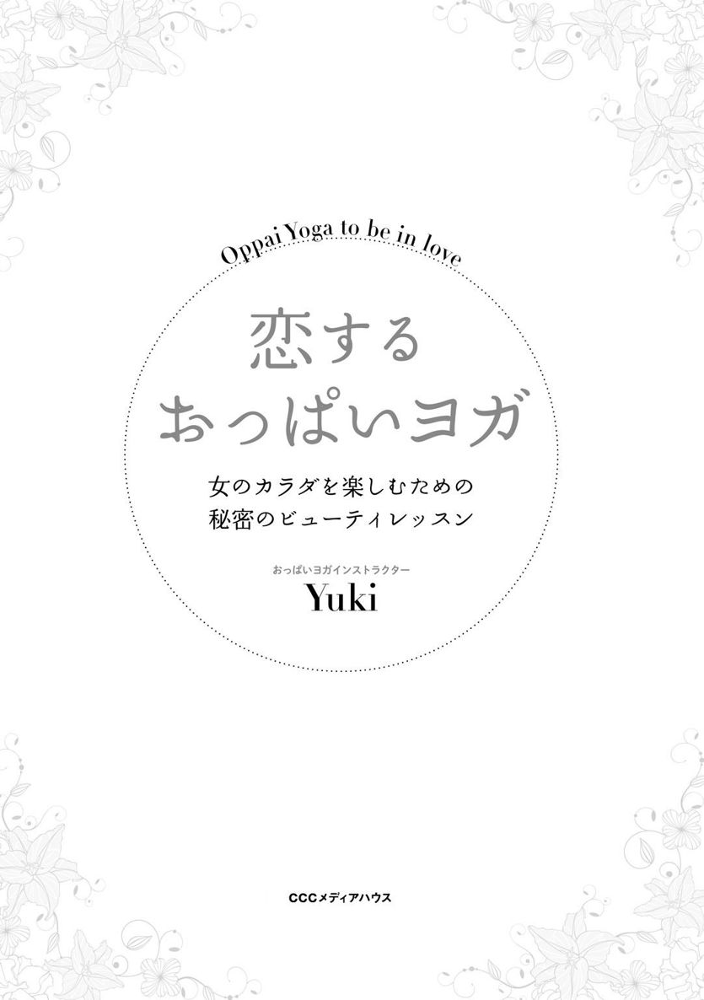
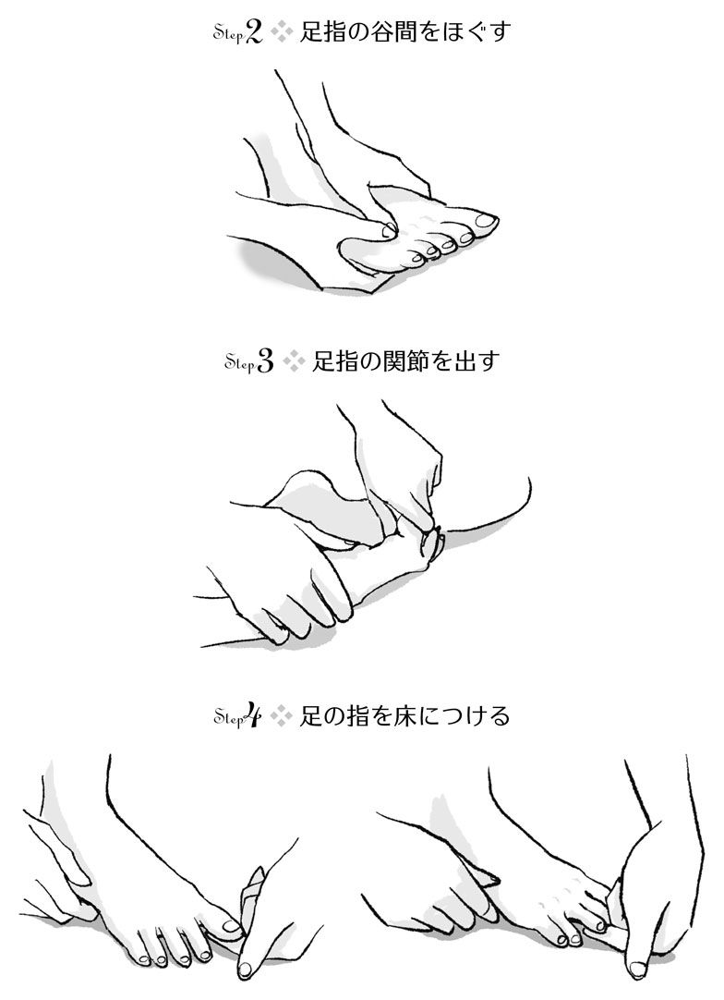

| 恋するおっぱいヨガ 女のカラダを楽しむための秘密のビューティレッスン | |
| Yuki | |
| (2014) | |

漫画、小説、一般書籍 RAW ZIP RAR 無料ダウンロード http://13DL.NET
おっぱいヨガって何?
はじめまして。おっぱいヨガインストラクターのＹｕｋｉです。この本を手に取っていただき、ありがとうございます。
私のお仕事は、ヨガのポーズを教えることでもバストケアをすることでもありません。一言でいうと「女性の目覚めを応援すること」。「すべての女性が、自分が美人だと素直に言える世界をつくること」を合言葉に活動しています。
女性は誰でも、存在しているだけでまわりの方を幸せにするような美しさや癒しの力を内側の深い所に持っています。でも、そのことに気づいていない方や、気づいていても生かしきれていない方もいらっしゃいます。これはとてももったいないことだと感じていました。だから私は全国各地をまわり、目覚まし時計のように女性たちを起こしています。
「おっぱいヨガ」という言葉も、みなさんのハートをこしょこしょとくすぐるためのもの。ビックリしてハートを開いちゃったり、ついついほっぺがゆるんじゃったり......。そんなきっかけになったらいいなという願いを込めています。
でも、この「おっぱいヨガ」という言葉は、単に意表をつくためだけにつけたのではありません。「おっぱい」は女性性の象徴。女性として生まれた自分を愛する、という意味を込めています。また、ヨガは単なる体操ではありません。「ヨガ（ＹＯＧＡ）」の語源は「ＹＵＪ（ユジュ）」＝「結（ゆい）」。体と心と呼吸を結びつけ美しく動く、他者と仲良く結びつく（調和する）といったことを追求する学問です。「おっぱいヨガ」＝「女性らしく愛をもって美しく調和する」という意味なのです。
というわけで、この本は単なるバストケアやヨガの本ではありません。みなさんの内側にくすぶる美しさを見いだし、美しさが〝ついうっかり〟もれ出しちゃうような心と体に整え、その美しさで世界中を優しく照らすよろこびをシェアするための本です。見た目さえきれいになればＯＫということでは決してありません。見た目を整えるだけでは満足できない、それだけではモチベーションが上がらない、幸せとは言えない、という大人の女性のための本です。
お手入れするとどうなるの?
「え!? じゃあ、本の通りやってもナイスバディにならないの??」と心配になったあなた。大丈夫です。本書では、内側の美しさが外側に立ち現れるようにするために、何をしたらいいのか? ということをご紹介しています。内面も外見も、立ち居振る舞いも美しい＝「どこをとっても美しい人」を目指しているのです。
具体的にはこういった変化が期待できます（※効果には個人差があります）。
◎自分で自分のことを「美しい」と思えるようになる。
◎美しい姿勢になる。
◎女性らしい丸みを帯びた体型になる。
◎しなやかで強い美脚になる。
◎バストがふっくらふわふわになる。
◎月経が約３～４日ほどで終わるようになる。
では、どんなことをすればいいのでしょうか? まずは、背景にある考え方を紹介します。
私たちは芸術作品
私たちの心と体は、実はこの内側の美しさから生まれた芸術作品です。そして、内側の美しさが宿る神殿でもあります。ですから、心と体をお手入れすることを通して、自分の内側の美しさに感謝するよろこびを経験できるようになります。この本では芸術作品の鑑賞の仕方と、お手入れの仕方をお伝えします。
中世の絵画の美しさを知るためには、歴史の知識がいるのと同じように、私たちの心と体という芸術作品の美しさを感じるためには、背景となる知識が必要です。裏を返せば「自分の美しさがわからない!」「私に限っては美しくない!」という方は、単に自分自身を観察するための知識がないだけかもしれないのです。
たとえば、「月経がつらくて嫌い」という方は、月経がいかに女性の心と体を美しく整えるかを知らないだけだったりします。でも月経とは何か? もっというと、そもそも人の日々の営みとは何か? という本質的なところをお伝えすると、たいていの方は月経に対する嫌悪感がなくなり、結果的に月経が楽になることが多いのです。自分自身を知るということは、自分の中に元々ある美しさに気づくことなのです。
そして、芸術作品には、芸術作品にふさわしいお手入れ方法があります。特に私たち女性の体はとても繊細につくられているので、繊細なお手入れが必要です。ですから、バストアップのために腕立て伏せのようなパワフルな筋トレをするのは、実はナンセンスです。女性らしい丸みのある体型に整えるカギは「女性ホルモン」。
この女性ホルモンを味方につけるには、男性らしい筋トレではなく、女性らしい動きが必要です。表面にある大きな筋肉を発達させるのではなく、内側にある姿勢を整える筋肉を整えることや、月経周期を安定させる生活習慣が大切になります。
本書には、「腕立て伏せを毎日10回×３セットやりましょう」などということは書いてありません。女性は「波」を大切にする生き物。だから毎日とか10回とか、一定の回数を決めてしまうと、せっかくの女性性の波を生かすことができません。たいていの女性は、月経後から排卵日前までは、やる気満々で、逆に排卵後から月経日まではまったりのんびりしたいもの。毎日同じ動きなんて、できるはずがありません。月経周期を無視した激しい運動は、女性には合わないのです。こういうことは男性にお任せして、私たちは女性らしいやり方で、きれいになればいいのです。
女性らしい心と体の整え方とは?
女性らしいやり方とは、どんなものでしょうか? 詳しくは本編で紹介しますが、レッスンでは女性の体を「お花」にたとえてお伝えしています。足裏は根っこ、骨格は幹と枝、バストはお花、といったところでしょうか。植物は自分で大きくなるのではなく、大地や太陽、空気から栄養をもらって、はじめて大きくなります。私たちも同じ。大地に支えられ、空気を吸うことで、はじめて動くことができます。
自分で動くのではなく、まわりのおかげでやっと動ける。そんな動きを練習することは、女性性の特徴である「受け入れる」ということを学ぶことにつながります。
私たちは一人で生きているのではありません。たくさんの方に支えていただき、食べ物をいただき、月経の波に揺られながら、やっと生きていられる。そういった周囲に対する感謝の気持ちを表現する動きこそが、女性らしい心と体の整え方です。たとえば「あれを食べれば太るからダメ」というような、食べ物のせいにするダイエットで美しくなれるのでしょうか? もし、万が一、スタイルがよくなったとしても、心はどうでしょう? 食べ物の命をいただいていることへの感謝の気持ちのない女性に、本当の美しさはあるのでしょうか。
私はあなた自身が花のような美しい存在だということに気づいてほしいのです。そして、どうやって生かされているのかを知り、命をいただいたことに感謝して、自分らしい人生を送ってほしい。そうすれば、無理せずていねいに、愛情を持ってお手入れを繰り返せるようになるはず。こうした考え方をもったうえで行うお手入れこそが、女性らしい心と体の整え方だと私は思っています。
きれいになったら、何をしたいですか?
今からみなさんに一番大切な質問をします。
あなたは、きれいになったら何をしたいですか?
これは、私のレッスンや講座、コーチングのセッションに参加してくださるすべての方に投げかける、とても大切な質問です。
あなたはなぜ、この本を手に取ったのでしょう?
なぜ、きれいになりたいのでしょう?
きれいになって、何をしたいのでしょう?
最初はそこまで考えず、ノリだったかもしれません。もちろんそれでいいのです。でも、どのタイミングでもいいので、一度ぜひぜひご自身の胸に手を当てて、よくよく思い出してみてください。ちなみに、レッスンに参加してくださる女性たちに多いのはこんな夢です。
水着を着たい、ハワイに行きたい、体のラインが出るお洋服が着たい、パートナーが欲しい......。
このお話をするだけで、女性たちの目はキラキラと輝きはじめます。ご本人にどれだけ自覚があるかはわかりませんが、私から見ると、こういうお話をするときの女性はみんな内側の美しさがダダもれ状態。とってもとっても美しいのです。
心の奥底にある「美しさを楽しみたい!」「人生を楽しみたい!」「自分を愛したい!」「人を愛したい!」「幸せになりたい!」という気持ちに気づくとき、女性は美しさに目覚めます。こういう気持ちでお手入れをするからこそ、内側の美しさが立ち現れるのです。
ちょっと想像してみてください。「自分はダメだ」「体型も女性らしくないし、月経も不規則だから何とかしなくちゃ」と思いながらお手入れをする場合と、「きれいになりたい! 楽しみたい!」と思ってお手入れをする場合、どちらがきれいになりそうですか? こたえは明らかですよね。でも、意外とみなさん気づかぬうちに前者になりがちです。
前者はお手入れとは言いません。あえてキツイ言い方をすると、お手入れの名を借りた自虐行為です。ただお手入れをすればいいわけではありません。「何を思ってお手入れをするか」「何をするかより誰がするか」が何よりも重要であることを知ってほしいのです。
そして、もう一つ、とても大切なこと。先ほどの、水着を着たい、ハワイに行きたい......というお話、今すぐやればいいと思いませんでしたか? 水着を着るのに誰かの許可がいるのでしょうか? ハワイになんて、行こうと思えばすぐ行けますよね? しかし多くの女性はこんな勘違いをしています。「体型が整っていないと、ハワイで水着を着てはいけない」と。誰がそんなことを言ったのでしょう?
これはほんの一例ですが、私たちは知らない間に体型と自己価値を結び付けて考えてしまいがちです。明らかに関係がないのにもかかわらず、です。こうしたちょっとした勘違いに気づくと、女性の心は解き放たれます。次第に、元々きれいだったことに気づき、きれいでいる自分を許しはじめます。
以前、こんなことがありました。女性性の波に合った暮らし方をご紹介する講座のときのことです。私が体のラインがはっきり出るワンピースを着ていたら、参加者のみなさんが「Ｙｕｋｉさんのようなお洋服を着たい!」とおっしゃったので、私のワンピースを何人かの女性にお貸しして、実際に試着していただきました。着たいなら今着ればいいですよね? ということで。
すると、みなさんの目がキラキラと輝きだして、姿勢もシャンとして美しく、ウエストもなぜか細くなり、顔色も一気によくなったのです。みなさん、本当にちょっとした勘違いで、自分の美しさを封印していただけということに気づき、元のお洋服に戻った後も、ずっと幸せそうにしていらっしゃいました。
Ｌｅｓｓｏｎ１で詳しく書かせていただきますが、私たちは実は未来を先につくっています。「あの洋服が着たい!」と思ったら着てしまうと、洋服に似合う体型になるようにできています。なりたい自分を先にイメージしてしまうこと、できるだけそうなった状態に近いことを先に経験してしまうことが、ポイントなのです。
私たちは、まだまだ、どんどん美しくなる可能性を持っています。年齢や環境、現在の状況なんて、はっきりいって関係ありません。ぜひ、そういったことで自分を縛らず、もっと自由になってほしいと思います。本書でご紹介するのは、そのためのレッスンです。どうぞ、夢を見ながら、ていねいに自分を愛し、美しく幸せであることを、自分に許可してあげてくださいね。
それではさっそく、わくわくしながらお手入れをスタートしましょう!
目 次
おおらかに食べる／ミラクルなハーブティーとお塩／月経周期と食べ物
日本人女性は塩風呂に／月経時は頭と目にやさしく／動物らしく生きる
内側の美しさがにじみ出るような女性になるための「おっぱいヨガ」ということで、さっそく体を動かしましょう......と言いたいところですが、まずは行動を起こす前に、自分の体や気持ちを観察することからはじめていきましょう。
なぜそんなことをするのか? 理由はとてもシンプルです。たとえば医者が診察をせずにいきなり注射をしたりするでしょうか? まず「診察」からはじめますよね。
美しい心と体に整えるときも同じ。自分がどういう状態なのか? そのことについてどう思っているのか? どうなりたいのか? を明確にするところからはじめないと、行動が空回りしてしまいます。逆にここが明確になれば、すべてはスムーズに進みます。まずは「観察をする」ということからはじめましょう。
全裸を毎日観察していますか?
私のレッスンに来てくださる女性たちによくこんな宿題を出します。
●毎日全裸を鏡に映して、穴が開くくらい観察しましょう。
●自分をなでなでしたり、キスしたり、ハグしたりしましょう。
●ノートを用意して、自分の体を見て感じたことを書き留めましょう。
そうすると、こんな反応が返ってくることが多いです。
「ヘコむから見たくない!」
私も、以前はずっとそう思っていました。どうせブスしか映ってないから、鏡を見たくない。写真も大嫌い。授乳で垂れたおっぱいなんて、見るのはおろか思い出すことすらイヤ。どんなにがんばったって、今さらどうにもならない。どうやって隠そう? どうやってごまかそう? とばかり考えていました。
そんな私でしたが、ヨガを学んでからすべてが変わりました。きっかけはヨガのインストラクター養成コースに参加したときに、先生が最初におっしゃったことです。
「人は元々、美しい」
「人の美しさに気づけないときは、その人を見るメガネが曇っているだけだ」
最初は、意味がさっぱり分かりませんでした。そんな私を見かねてか、先生がこんなお話をしてくださいました。
あるポーズができず、落ち込んでいる生徒さんがいたとします。生徒さんは「ポーズができない自分＝ダメな自分」と感じています。でも、ポーズができずに落ち込むということは、本当は心の奥でポーズができるようになりたいと願っているのです。できないままでよいのであれば、落ち込まないのではないでしょうか。「できない」という一言の中には、強い意志が見えます。ここを見るために、心のメガネを磨きなさい。できないという表面的なところだけを見るのではなく、その奥にある「光＝内なる美」に気づく人でありなさいということでした。
同じように、自分が嫌いという気持ちの奥には「本当は自分を好きになりたくて仕方がない」という本心が見てとれます。
どうでもよいと思ったら、いちいち嫌いにならないのです。「これ以上傷つきたくない」。すなわち「自分が愛おしくてたまらない」「自分を守りたい」という気持ちがあるから「嫌い」と思うのです。
それ以来私は「鏡を見るのがイヤ」という自分に出会うたびに少しずつ「私って、なんて自分のことが好きなんだろう」「愛おしい」と思うようになってきました。
自分の本当の気持ちに気づいた女性の凛とした美しさは、息をのむほどです。だから私は、目の前の生徒さんたちに恋をしてしまいます。そのたびに生徒さんたちと同じ美しさが私にもあるということを、思い起こさせてもらっているのです。
自分の美しさに恋をしている自分に気づく
美しさというものは、勝手に湧き出てくるものです。いつも存在しているものです。何かを変化させて美しく変えるのではなく、取ってつけるのでもなく、元々持っている美しさを見つけられるかどうか? 美しさを取り出して磨きをかけられるかどうか? というお話なのです。
恋をしているときを思い出してみてください。いつも見ている空が急に美しく見えたり、道端に咲く名も知らない花の美しさにハッとしたりしてしまうことはありませんか? 別に空が急に青く変化したり、突然お花が咲いたのではありません。恋をすることで、元々あった美しさに自分のハートが開いただけなのです。
美しくなるコツは、まず自分の美しさに恋をすること。
がんばって恋をしなくても大丈夫（そもそも無理やり好きになろうとしたら、それは恋じゃないですよね）。自分を好きになれないと思ったら、そのたびに、この章を読み返してみてください。「できない!」「ダメ」「無理」と思うたびに、本当は「自分好き～」「かわいいから傷つけたくない」「守りたい」と思っていることを思い出しましょう。「自分の美しさに恋をする」を正確にいうと、「自分の美しさに恋していた自分に気づく」となります。
自愛それとも自虐?
自分に恋をして惚れ込んでお手入れすれば、体や心はみるみる変わります。でも、自分をダメだと思って何とかしようとがんばると、それは自分の脳に「私はダメだ!」という意識をひたすら植えつけ、洗脳することになります。
Ｌｅｓｓｏｎ２以降でご紹介するお手入れが、自分を慈しむ「自愛」になるか、自分を責める「自虐」になるかは、「自分の美しさに恋をする」ことを「初期設定」にできるかどうかで決まります。もしあなたがたくさんのダイエット法、美容法、エクササイズなどをいくら試しても効果が出なかったなら、この初期設定を間違っていたのかもしれません。自覚なく、自分をいじめてしまっていたからかもしれません。今この瞬間から「自分に恋することをいつも許しているか?」ということを、問いかけてみましょう。
気づいたときでいいので、鏡を見ながら自分に問いかけをし、表面に上がってきている現象や気持ちの奥にある「背景」を見るようにしていきます。すると何度やっても必ず「愛にあふれる自分」や「常に成長したいと願う自分」にたどり着きます。「なぜ、自分を見るのが嫌なのか?」「なぜ、自分を美しいと思えないのか?」「なぜ落ち込むのか?」「なぜイライラするのか?」......何度も問いかけてみてください。
何回やっても、どんなときにやっても、どんなに時間がかかっても、結局同じところにたどり着きます。「ああ、結局私はどれだけ自分がかわいいのだろう?」「そんなに成長したいのか」と。
自分の美しさを信頼する
初期設定とともに、結論を決めてしまうと楽になります。私はこう考えると決めてしまっています。
「いつも、何があっても、自分に恋をする」
「どんなものの中にも、美しさを見つけ出す」
ちなみに私は「美人」という言葉をこう定義しています。
「自分の美しさを信じて恋をしている人」
「自分は美しいと覚悟を決めている人」
昔は「美人」とは目鼻立ちが整っていること、メリハリのあるボディであることだと勘違いしていました。外見に美しさの足場を求めたがために、いつもまわりの評価が気になって仕方がなかったのです。今日は目の下にクマがあるから笑えない。おっぱいが垂れたらハートを開けない......というふうに。本当は目の前の人に素直に微笑めばよかったのです。何も恐れる必要はなかったと今ならわかります。
本当に美しい人は、何も恐れることはない、とわかっている人なのだと思います。わかっていてもついうっかり恐れてしまう自分をも丸ごと受け止め、許すと覚悟を決めている人だと。
そもそも美しさって何なのでしょうか? もし、ダイエットや体質改善に成功して見た目が麗しくなったとしても、それは内側からにじみ出る真の美しさでしょうか?
私は、形の美しさは必ずしも必要ではないと思います。目が大きくないと、優しいまなざしができないのでしょうか? おっぱいが整っていないと、大好きな人をハグできないのでしょうか? そういうことではないはずです。でも「美人じゃないもん!」と卑屈になっている人、自分に自信がない人は、ここを勘違いしています。
美しい人は、自分が美しいと信じています。自分が歩けば、街はパッと花が咲いたかのように明るくなるということに、疑いの余地がない。自分の存在が、誰かを癒すということを素直に信じていて、そういう女性共通の運命に素直に従っているのです。本当に、シンプルに、ただそれだけです。
こういう女性は内面の美しさが、隠そうとしても外見ににじみ出てしまいます。頭から足の先まで、愛と美で満たされ尽くしているのです。当然、外見も変化します。表面的ではない本物の美しさはこうやってつくられていきます。
外側にくっついているパーツが望み通りでないことを言い訳に、自分の内側の美を表現することを放棄している限り、どんなお手入れをしようとも本物の美しさを手に入れることはできません。言い訳せずに、今あるものをそのまま受け入れ、愛する人こそが美しい人なのです。
そして、実は、私たちの脳は「自分が見たいものを見る」ようにつくられています。自分で自分のことを美しいと決めれば美しくて、美しくないと決めれば美しくないのです。
こんな経験はありませんか? 好きな人ができた途端、自分のまわりにカップルが増えたように感じる。ハワイに行くと決めた途端に、水着を売っているお店が増えた気がする。犬を飼い始めた途端、まわりが愛犬家だらけだと気づく、など。脳機能科学者の苫米地秀人先生は、『残り97％の脳の使い方』（フォレスト出版）の中で、こんな例を紹介しています。「フランス人は風鈴の存在を知らないので、風鈴が目の前にあって、音が鳴っていても気づかない」と。
そして、何を見たいと思うのかの選択権は、常に自分にあります。だから、美しくなりたいと思ったら、何よりも先に、まず「自分は美しい」と決めてしまうことが大切です。「自分は美しい」「何があっても、誰が何と言おうと、自分の中にある美しさに目を向ける」と覚悟を決めることです。女性として生まれたあなた、もう自分が美人であることに抵抗することを諦めて、いつも美人であり続ける自分を許してあげてくださいね（笑）。
全裸を見て、ハグしましょう
ここまで読み進めてみていかがですか? 全裸を観察することの大切さをおわかりいただけたでしょうか? 観察すると、自分が自身の心と体を、そして自分の人生をどんなふうに見ているのかがあきらかになってきます。すると、本当は現状を嫌だと思う気持ちの背景にある、自分を愛し高めたいという本心までも見えてくるのです。これが、自分の中にある美しさに気づく第一歩になります。この世に美しくない人はいません。ただ、見えていないだけです。
さあ、あなたも「毎日全裸を観察」して自分の美しさを発見しましょう。そして「自分をハグ」して、自分の中にある自分に恋をしている気持ちを楽しみましょう。
自分を見たくないという方へ
ここまで、自分の体や心の状態を観察しましょうというお話をしてきました。でも、そうはいっても見るのが怖いときに、どうしたらいいかをご紹介します。実は「恐れと仲良くすること」こそが、内側の美しさを引き出すカギなのです。
恐れは宝物
恐れと仲良くするために、恐れがあるなと感じたら、その思いをノートに書き出しましょう。このあとお伝えしますが、実は恐れは宝物。宝探しのつもりで、何に対してどんなふうに恐れているのかを書いていきます。一通り書き出したところで、そもそもなぜ「恐れ」が生まれたのかを考えてみましょう。自分を見ることに対する恐れのきっかけは、たとえばこんな思いなのではないでしょうか?
「ダメな現実を認めたくないから」
「見てもどうせ変われないのではないか?」
ほかにも「女の子であることを認めたくない」「続けられないときに傷つくのが怖い」などなど、いろいろな恐れがありますが、根っこはどれも同じ。どんな恐れも自分の内側に眠る大切な宝物です。では、どうして宝物なのかを一緒に考えてみましょう。恐れの奥にはこんな思いが隠れていませんか?
「もしも○○だったらどうしよう」
わかりやすいように「もっとやせたい!」と思っている方を例にあげてみていきましょう。太っている人に全裸を観察してねと提案すると、たいていこうおっしゃいます。
「もしも予想以上に太っていたらどうしよう」
この気持ちの奥にはこんな思いがあります。
「もっとやせていればいいのに」
「やせていれば自分を好きになれるのに」
ということは、本当はこう思っているということではありませんか?
「本当は、やせて自分を好きになりたい」
「でも、そうならないと怖いから逃げよう」
逃げて自分を守りたいということですね。では、なぜ自分を守るのでしょう? それはズバリ!
「自分が大切だから」
「自分を愛しているから」
大切ではないもの、好きでもないものを守りたいとは思わないのです。つまり、恐れていること＝やりたいことなのです。そして、恐れの中には保身があるのです。そして、保身がある＝自分を大切にしているということ。だから、恐れが出てきたら「ああ、やりたいことが見つかった」「私って自分が大好きなんだな」ということがわかったということなのです。
恐れは自分の夢を指し示すガイド、つまりは宝物なのです。
感謝して恐れとともに過ごす
恐れが大切な自分を守る愛情表現だと理解したら、次は、この恐れとどうおつきあいをするのかをご紹介します。とてもシンプルです。それは......
「感謝して放置して、怖いままで行動する」
何か特別なことをする必要はありません。「恐れ＝自分への愛」なのですから、排除せずにそのまま怖がっていればいいのです。そして、そのまま怖いことをやればいいのです。「怖い、怖い、怖い。でもやっちゃえ!」という感じ。ジェットコースターと同じです。そして、ジェットコースターと同じで、やってしまえば楽しくなるのです。自由人の高橋歩さんも、著書の中でこうおっしゃっています。「不安? 恐れ? 心配? そんなもの常にあるよ～、そりゃ。でも、やるけどね（笑）」
① お花を育てるように自分を育てる
「やっとおっぱいのお手入れがはじまるのね!」と思ったあなた。ほんの少しだけ、お待ちくださいね。おっぱいのお手入れの効果を上げるために、美しい姿勢をつくるために、まず土台になるパーツのお手入れから始めましょう。土台とは、足裏、下半身、骨盤、背骨などを指します。
おっぱいは、植物に例えると「お花」。もし、お花を元気にしたいと思ったら、お花を触るでしょうか? その前に根っこや茎の状態をチェックしますよね? 体も同じです。下半身や背中、肩まわりを整えることが、おっぱいに栄養が行き届く体をつくること、美しい姿勢をつくることにつながります。
基本的に、お花は何もしなくても美しく咲くようにできています。でも、つい肩に力が入ったり、必要以上にがんばったりしてしまうのが、私たち女性のかわいらしいところ。そんながんばり屋さんの自分を認めて、許し、手放すことで、本来の美しい状態を探していきましょう。
植物は自分で大きくなるのではなく、大地や太陽、空気から栄養をもらって、はじめて大きくなります。私たちも同じ。大地に支えていただき、空気を頂戴することで、はじめて動くことができます。自分でムキになって筋トレをするのではなく、まわりの空気や大地、重力、自分の体重......といったものに愛され、サポートを受けながら体を整える方法をご紹介していきます。
② 根っこ＝足を整える
普段、何げなく使っている足ですが、足がどんなふうに存在し、地面とつながっているのかを自覚するレッスンから始めましょう。
大地に根をはる
足の裏が大地に根付くようになると、全身の緊張が一気にゆるみ、安定します。大地と自分の体をつなぐ足は、体を整える際の最重要パーツです。
※右足から始めてください。床の上か椅子に座って行いましょう。お尻を冷やさないように、気をつけてくださいね。
〔Step1〕大衝を押す。
冷えや肝臓のツボとして有名な大衝は、万能のツボ。女性器、尿道、目などにも働きかけてくれる、覚えておくと便利なツボです。
右足の甲の親指と人差し指の骨の谷間を足首の方へ向かってたどっていくと、足の甲の真ん中あたりにある骨の手前にくぼみが見つかります。ここが大衝です。手の親指の腹をツボに当て、他の４本の指を足裏に回して、はさむようにしながら押します。強さはイタ気持ちいい程度に。１～３分を目安に押します。

〔Step2〕足指の谷間をほぐす。
右足の甲の指の骨の谷間（親指と人差し指の間、人差し指と中指の間......）を甲の真ん中から足先に向かって順番にほぐします。押したりもんだり、気持ちのよいやり方を探しましょう。
〔Step3〕足指の関節を出す。
あぐらで座ります。右足の親指の指先から数えて２つ目の関節を内側に曲げて、２～３回呼吸します。足指が本来の状態に戻ってくると、関節は直角に近いところまで曲がります。ほかの指も同様に行います（ほかの指は３つ目の関節を曲げます）。
〔Step4〕足の指を床につける。
右足の親指の腹に、手の人差し指を置きます。足指は床に向かって強く押し、手の指は足指を押し返して抵抗した状態で２～３回呼吸をキープします。他の指も同様に行います。足の指が、床にしっかりと根付くようになる運動です。

〔Step5〕かたい床の上で、様子を確認する。
かたい床の上に両足で立ち、先にケアした右足と、何もしていない左足の変化を感じます。足と床の接地面はどうなっていますか? 左半身と右半身、何か違いはありますか? 可能な範囲で、感じたことをノートに記入しましょう。
せっかくお手入れをしても、どんな変化があったのか自覚できないと、すぐにやる気がなくなってしまいます。はじめのうちは、片足だけ一通り行ったら、体の変化を感じるようにしましょう。慣れてきたら、このプロセスは省略して構いません。
〔Step6〕左足も同様に行う。
基本の立ち姿勢（下半身）
足が安定したら、次は余計な力を入れず楽に立つ練習です。ここではまず、下半身だけ練習します。上半身の動きはＬｅｓｓｏｎ３で紹介します。
〔Step1〕つま先の向きを変えてみよう。
足の向きひとつで、骨盤の状態は変わります。ためしに足先を思いっきり内側に向けて立ってみましょう。お尻のお肉の間が開き、骨盤が前に倒れやすくなりませんか?
逆に足先を外側に向けて立ってみます。今度はお尻を恥骨側につきだしたくなりませんか? 足の向きに気を配ることが、骨盤の状態を整えることにつながります。
〔Step2〕脚を骨盤の幅に開きまっすぐ立つ。
骨盤の幅（両足の内側の間が手の握りこぶし１個半から２個分程度）に脚を開き、足を平行（両足の人差し指のつけ根からかかとの中心までのラインが平行）にして立ちます。
〔Step3〕足裏の４点を床につく。
両足の親指のつけ根（母指球）、かかとの内側、小指のつけ根（小指球）、かかとの外側の４カ所とすべての足指を床に根付かせます。足裏の内側のアーチ、外側のアーチ、横アーチが引き上がるのを感じます。Ｏ脚でもＸ脚でもない安定したまっすぐな脚を作るための立ち方です。
③ メインの茎＝骨盤と背骨を整える
樹木でいう幹の部分＝体幹を整える動きをご紹介します。ここでは主に骨盤と背骨をケアします。骨盤は体の要であるだけでなく、骨盤の中にある子宮はバストと同じ生殖器です。骨盤が整うとおっぱいが整い、おっぱいが整うと骨盤が整います。骨盤のしなやかさは月経の質を高める上でもとても重要です。
また、背骨の美しいＳ字のラインは、おっぱいに栄養を届けるメインの管になります。女性らしいくびれを生むのも、実はこの背骨のカーブ。体重が減ってもくびれができないという方は必見です。
くびれをつくる「しっぽ体操」
しっぽ（尾骨）の向きを意識しながら、骨盤を前後左右に傾ける体操です。
一般的に美しい立ち姿勢というと、お尻の穴を締めてビシッと立つイメージがありますが、この姿勢は骨盤の性質から考えると不自然な状態です。私たちは時間の流れの中で、いつも変化しながら暮らしています。一つの姿勢をずっと続けるということは、むしろ不思議なこと。時間や体、心の変化に合わせてナチュラルに動くからこそ、時の流れの中で見ると「静止しているように見える」のです。自在に変化するしなやかな骨盤を取り戻しましょう。
〔Step1〕前出の「基本の立ち姿勢（下半身）」で立つ。
〔Step2〕骨盤を前傾させる。
両足の親指のつけ根を起点に腰回りに至るまで、内側（中心）から外側へ竜巻があがるようなイメージで脚を回転させます。
※骨盤を動かすときには骨盤の下に伸びる脚を動かすのがコツです。
〔Step3〕骨盤を後傾させる。
Ｓｔｅｐ２と逆の動きです。腰回りから両足の親指のつけ根まで、外側から内側（中心）へ脚を回転させます。太ももやお尻が前に突き出ないようにしましょう。
〔Step4〕骨盤を前後に動かす。
Ｓｔｅｐ２とＳｔｅｐ３を交互に繰り返します。骨盤を自由に大きく動かすために、Ｓｔｅｐ２をＳｔｅｐ３より先に行います。
※時間や体、心の変化に合わせてＳｔｅｐ２とＳｔｅｐ３のバランスを保って立つことが、美しい立ち姿勢を生み出します。
※バランスがとりにくいときには、壁に手をついて行ってもかまいません。
〔Step5〕骨盤を左右に傾ける。
骨盤を前後に動かすことに慣れてきたら、今度は左右に傾けます。左右の腰骨を交互に高く持ち上げると、骨盤が左右に傾きます。
〔Step6〕骨盤を回す。
Ｓｔｅｐ２～５の位置を経由しながら骨盤を回します。右回り、左回り、両方とも行いましょう。８の字に回すこともおすすめです。
〔Step7〕動きを終える。
元に戻ったら、体や心の変化を味わいましょう。
まずは「犬」になる!（ダウンドッグ）
「しっぽ体操」で骨盤まわりを整えたら、さっそくヨガのポーズにチャレンジしましょう。ヨガのポーズはいろいろありますが、おすすめはこの「下向きの犬のポーズ（通称・ダウンドッグ）」。動きはシンプルですが、これ一つで全身を一度にバランスよく整える、万能ポーズです。二の腕シェイプ、美脚、バストアップ、背中の強化、柔軟性アップ、頭スッキリ......。効果が盛りだくさんの欲張りなポーズです。
〔Step1〕台形の四つん這いになる。
ヨガマットの上に、手を肩の幅、足を骨盤の幅につきます。肩の真下に手が、骨盤より10センチほど後ろにひざがくる、台形の四つん這いになります。手の指は開いて、人差し指のつけ根、親指のつけ根、小指のつけ根、手首の小指側の４カ所とすべての指の指紋を床につけます。ひじを張りすぎないように気をつけましょう。足指はマットにひっかけて、壁を押すイメージで少しかかとを遠くに押し出すようにします（足裏が床から垂直に上がる程度）。こうすると、下腹部に軽く力がみなぎります。
〔Step2〕三角形の山の形をつくる。
両手を場所を変えずに押し出し、かかとを後方に押し出すようにするとひざが床から浮き上がってきます。この力を利用してひざを空中に上げ、脚のつけ根を天井の方に押し上げるようにしながら伸びをします。しっぽ体操のＳｔｅｐ２の動きを意識しながら脚のつけ根を高い位置に持っていきましょう。できるだけ背骨がＳの字にカーブするようにします（難しいときはひざを曲げて行います）。背骨やももの裏、ふくらはぎなど、体の後ろ側が伸びる感覚を楽しみましょう。
〔Step3〕元に戻る。
息を吐きながら静かに四つん這いに戻ります。体と心の変化を味わいましょう。
④ ４つの枝＝四肢を整える
植物のように根っこからエネルギーを吸い上げて、全身へめぐらせるようにイメージしながら脚と腕を整えます。ここでご紹介するポーズでエネルギーの流れを意識するのはもちろんのこと、しっぽ体操、ダウンドッグ、立ち姿勢など、すべての動きを行う際に、エネルギーの流れを意識すると、ポーズの質が格段に高まります。
足から丹田へ＆丹田から足へ（脚上げ）
まずは、足裏から下腹部（丹田）にエネルギーを吸い上げるイメージを練習します。感覚がつかみやすいように、あおむけで、ひもを使って練習します。慣れてきたら、ダウンドッグや立ち姿勢を練習する際にも、この「足裏から骨盤へ」「骨盤から足裏へ」という流れを意識しましょう。
〔Step1〕ひもやタオルを用意して、マットの上にあおむけに寝る。
足裏に引っ掛けるためのひもやタオルを用意します。準備ができたらマットの上にあおむけに寝ましょう。前出の立ち姿勢と同じような状態で寝転びます。足は腰幅に広げ、かかとを床につけ、足の裏が体に対してまっすぐ向くようにしましょう。
〔Step2〕ひもを足裏に引っ掛け、脚を上げ、足から丹田への流れを感じる。
右の足裏の親指のつけ根と小指のつけ根を通る位置にひもやタオルをひっかけ、ひもを両手で持ちます。ひもを胸の方に引きながら、足裏でひもを遠くに押し返します。はじめは、ひもをお尻の方に引く力を強めに意識して、下腹部（丹田）に力がみなぎるのを確認します（足裏から骨盤へのエネルギーの流れを意識する）。
※どちらの足からはじめてもＯＫです。
〔Step3〕丹田から足への流れを感じる。
下腹部に十分に力がみなぎったら、今度は足裏でひもを遠くに押し返す力を強めに意識して、骨盤から足裏へエネルギーが戻っていくのを感じます。Ｓｔｅｐ２と３を交互に繰り返します。
〔Step4〕ひもを外し、右足を床に戻して、左足との違いを確認しましょう。左足も同様に行います。
手から胸の中心へ＆胸の中心から手へ（簡単なCat & Cow）
〔Step1〕あぐらで座って、手をつく。
ヨガマットの上に、あぐらで座り、手を体の前に肩の幅につきます。手の指は開いて、人差し指のつけ根、親指のつけ根、小指のつけ根、手首の小指側の４カ所とすべての指の腹を床につけます。ひじを張りすぎないように気をつけましょう。お尻を後ろにまくり上げるようにして、脚のつけ根が奥に引っ込み、腰が少しそるようにします（しっぽ体操のＳｔｅｐ２を座った状態で行います）。
〔Step2〕手から胸への流れを感じる。
手がマットから離れないように気をつけ、息を吸いながら手でマットを胸の中心に引き上げようとします。マットは動かないので代わりに胸がマットのほうに近づきます。ブラジャーのホックのあたりが左右から中心に寄り、二の腕が外に回り、鎖骨が横に広がり、胸がふっくらしてきます。同時に背骨のＳ字カーブが大きくなり、脚のつけ根が奥に引っ込むことも、確認してみましょう。
〔Step3〕胸から手への流れを感じる。
今度は息を吐きながらマットを遠くに押しのけます。背中が少し丸くなり、肩の力が抜けていきます。同時に骨盤が後ろに傾き、お尻の穴も締まることを確認してみましょう。Ｓｔｅｐ２と３を交互に繰り返します。
〔Step4〕変化を確認する。
手を床から外して起き上がり、感覚を確認しましょう。
手首が硬いと、おっぱいが垂れる!?（手首のストレッチ）
手首とおっぱいは密接につながっているのはご存じですか? 手首をほぐすことで、手先からのエネルギーを胸に届けるルートを整え、おっぱいにエネルギーが届きやすい状態をつくりましょう。
〔Step1〕手首をストレッチする。
壁に向かって立ち、肩の高さに手の平をつきます。手で壁を軽く押して手首に軽い刺激が入るのを感じます。
〔Step2〕手の甲側の手首をストレッチする。
今度は指先を下に向けて、手の甲側を壁に押しつけます。できる範囲で手の甲をすべて壁につける方向にストレッチします。その後、手を離して感覚を確認します。
おっぱいに栄養を送る流れが整ったところで、いよいよおっぱい周辺のお手入れを始めましょう。ポイントは３つ。まずはブラジャーの役割をする筋肉（ブラジャー筋）を整え、使い方をマスターすること。２つ目は呼吸。呼吸の助けを借りて、体の奥深くにあるおっぱいを支える筋肉を整えます。そして最後はおっぱいそのもの。
とはいえ、おっぱいは脂肪のかたまり。とてもデリケートにできています。女性に生まれたことに感謝して、緊張をゆるめ、あたため、包み込んで愛情を注ぎこみましょう。
① ガク＝ブラジャー筋を整える
ブラジャー筋ってどこ?
美しいおっぱいを保つためには、肩甲骨の周辺の筋肉（ホック筋）、鎖骨のまわりの筋肉（ストラップ筋）、肋骨の間の筋肉（コルセット筋）の３つが大事です。
バストアップには、ほふく前進
ブラジャー筋がどこかを理解したら、さっそくメインになる肩甲骨のまわりの筋肉から動かしてみましょう。うつぶせになって、ほふく前進＝背中の力で前に進むような動き（うつぶせで懸垂をするような動き）を練習します。コツは、腕がブラジャーのホックのあたりから生えているという意識を持つこと。腕を動かす際に、肩甲骨から一緒に動かすイメージです。
〔Step1〕うつぶせになり、手を肩幅で前方に伸ばす。
ヨガマットなどの上にうつぶせになり腕を伸ばします。ウルトラマンが空を飛ぶときのような姿勢になります。手は肩の幅で、人差し指のつけ根を床にていねいにつきます。できるだけ肩幅を広くとり、ブラジャーのホックを少しきつめに締めたところをイメージして、肩甲骨の内側の下のヘリを少し寄せます。両肩とブラジャーのホックあたりで、逆三角形をつくるようなイメージです。お腹をべたっとつきすぎると、腰に負担がかかりやすくなります。内臓を縦に長くし、しっぽをかかとのほうにたくしこむようにしましょう。
〔Step2〕手で床をつかまえて、背中のほうに引き寄せる。
息を吸いながら手で真上から床を押すようにとらえてから、胸の厚みの中心（またはブラジャーのホックのあたり）に向かって、腕を引き寄せます。背中の逆三角形をイメージしながらロボットが腕を自分の胴体にはめ込むような感じを意識します。ひじは伸ばし過ぎず、曲げ過ぎず、一定の状態を保ち、ひじの曲げ伸ばしではなく、あくまで腕全体を胴体にはめ込むようにしましょう。手はだんだん手前に。上半身が床から離れ、胸を開いて少し反ったような体勢になるところまで手を引いてきます。肩甲骨の間に鉛筆をはさむような感じをイメージして、肩甲骨が肋骨に対してフラットな位置にくることを目標に腕を動かしましょう。
〔Step3〕しばらく自然な呼吸を繰り返しながらキープする。
〔Step4〕元の姿勢に戻る。
息を吐きながらゆっくり元に戻ります。元に戻ったら、体の変化を味わいましょう。
寝ているだけで、バストトップの位置が高くなる、魔法のポーズ
重力や自分の体重を使って、少しずつ体に働きかけるので、効き目はゆるやかですが、疲れているときや月経中にも行うことができます。毎日少しずつ続けることで、無理なく美しい姿勢を保てるようになります。朝晩１回ずつ、３～15分程度行うと効果的です（15分以内にポーズを終えるようにしましょう）。
〔Step1〕ヨガマット、タオル２枚、ブランケットを用意する。
ベッドの横にあらかじめ道具をセッティングしておくと、習慣化しやすくなります。
〔Step2〕１つのタオルを俵状に丸める。
高さはお好みで。後であおむけに寝たときに、胸が開いている実感があり、肩や首がつらくないところを探します。朝晩毎日行うことが苦にならないように、丸めたタオルをひもなどでくくっておくこともおすすめです。
※タオルの大きさや巻き方で、厚みを調整します。
〔Step3〕Ｓｔｅｐ２で用意した丸めたタオルを胸の下に敷いて、あおむけで寝る。
胸が開いて、肩や首が苦しくないところ、呼吸が楽なところ、腰が反りすぎない場所を探します。タオルの高さを低くしても、肩が丸まって苦しい場合は、肩の下にもう一枚タオルを敷いて、高さを出しましょう。
〔Step4〕落ち着いたら目の上にタオルをかけ、ブランケットを体にかけてそのまま目を閉じてしばらく休息する。
３～15分程度を目安に、好きなだけ過ごします。15分以上行うと、かえって体に負担がかかります。寝てしまいそうな場合はタイマーをセットするなど工夫して、15分以内にポーズを終えるように気をつけましょう。
※腰が痛い方はひざを曲げ、ひざはつけたままで足を少し開きます。
〔Step5〕変化を確認する。
下に敷いたタオルを外し、ヨガマットの上にあおむけになって、変化を確認します。呼吸が楽になったり、胸のあたりがふっくらする感じがあるでしょう。
② 養分を吸い上げる仕組み＝呼吸
私たちは呼吸によって生かされています。植物が根っこから養分を吸い上げ、光合成により命を育むのと同じように、呼吸なくして私たちは何もできません。呼吸は尊いものです。でも、呼吸＝私ではありません。私たちは元々「よりよく生きたい」と願いながら生まれてきていて、そのためにまわりにある空気を生かし、生かされるという学びを日々実践しています。ですから、呼吸に支配されるのではなく、呼吸と恋をしながら、ダンスを踊るかのように戯れる練習をしましょう。
吸う息によって、人生の豊かさや美しさに心と体が開くよろこびを知り、吐く息が植物やまわりの人に対する感謝の表現であることを受け入れましょう。日々の呼吸に恋をすることが、女性らしい包容力と躍動感のある心と体をつくるコツです。
この本の中では胸式、腹式、完全式（＝胸式＋腹式）という３つの呼吸法をご紹介します。それぞれの呼吸法に良し悪しはありません。なりたい自分に合わせて、呼吸法をチョイスする聡明さを持ちましょう。
すべての呼吸は鼻から吸って鼻から吐くようにします。難しい場合はできるだけ鼻から吸って、口から吐いてもかまいません。
おっぱいを内側からふっくらさせる胸式呼吸
吸うときに胸が膨らみ、吐くときに胸がしぼむ呼吸法です。いわゆる深呼吸です。吸うときの動きが、胸をふっくらさせ、肩を広げる動きになるので、バストアップや美しく血色のよいデコルテ、健康的なお肌をつくるのに向いています。
吸う息を意識しやすいので、交感神経が刺激され、頭がすっきりし活動的になる効果があります。また「胸式」とあるので胸に意識が向きやすいのですが、腹筋の〝コルセット〟を締めた状態で行うので、実は腹筋のトレーニングにもなっています。慣れるまでは、空気が入る場所を手で確認しながら行いましょう。
〔Step1〕正座で座る。
〔Step2〕息を吸いながらブラジャーのストラップを持ち上げるような動きをする。
息を吸いながら体側を上に伸ばします。肩を耳のほうに、わきのくぼみを深く、胸の上のほうをふっくら、鎖骨を下からふんわりと持ち上げるようなイメージです。さらにお尻がつられて上に上がらないように、骨盤を重く、地面にしっかり根付かせます。慣れるまでは一時的に肩に力が入りますが、次に息を吐く際に肩の力が抜けるので、気にしないようにしましょう。
ポイントは体側が上からの圧迫を受けていないこと。空気が入るスペースを十分に確保するコツです。ちょうど、ブラジャーのストラップを上に引き上げて、バストトップの位置を高くしたような状態です。
〔Step3〕そのまま息を吸いながらブラジャーのホックをきつめに締める動きを。
肩やわきの下、鎖骨の位置が高いうちに二の腕を外に回し、肩甲骨の下の内側のヘリ（ブラジャーのホックのあたり）を中心に寄せます。二の腕を外に回すと、体の前側のタンクトップのラインのあたりがふっくらしてきます。鎖骨を横にふわっと広げるようなイメージを持ちましょう。
肩甲骨の動きは、ちょうどブラジャーのホックをきつめに締めるような動きです。肩甲骨の間に鉛筆を軽くはさむような感覚をイメージするのもよいでしょう。背中を縮めると、背中から見て反対側にあるバストのあたりが自然にふっくらとオープンになります。扇の要が安定すれば、扇が無理なく美しく開くのと同じです。
〔Step4〕Ｓｔｅｐ２と３を行いながら内臓をたてに長くするイメージでお腹を締める。
ちょうどウエストにコルセットを締めているようなイメージでお腹を薄く、たてに伸ばします。
〔Step5〕息を吐きながら余計な力が抜けるのを待つ。
息を吐きながら、吐く息に合わせて肩の力が自然に抜けていくのを感じましょう。Ｓｔｅｐ１と２で整えた胸のふっくら感、鎖骨の広い感じがなくならないように、Ｓｔｅｐ１で伸ばした両体側の上に肩を休ませる状態にします。頭頂部を糸で吊られたような感覚であごに力が入らないようにしながら息を吐くのが美しい姿勢を保つコツです。内臓がたてに長いイメージを保ったまま、お腹をゆるめずに行います（難しければお腹がゆるんでもＯＫ）。
〔Step6〕Ｓｔｅｐ２～５を繰り返す。
回数は決めなくていいので、できる範囲で繰り返しましょう。
〔Step7〕様子を味わう。
コルセットを整える腹式呼吸
吸うときにお腹が膨らみ、吐くときにお腹がしぼむ呼吸法です。横隔膜が大きく上下に動きます。腹筋のトレーニングになるのはもちろん、肩や首の力が抜け楽な気持ちになり、吐く息に意識が向かいやすいのでリラックスしやすくなります。
〔Step1〕正座になる。
〔Step2〕息を吐きながらお腹を凹ませる。
肺の中の空気をすべて出し切るようなイメージで息を吐きながら、下腹部をヘコませていきます。下腹部に手を当てて様子を観察しましょう。
〔Step3〕下腹部をゆるめながら息を吸う。
息を吐き切ったら、自然に下腹部がゆるみ始めるのを待ちます。自分から息を吸うというより、ゆるんだことで空気が自動的に入ってくるようにしましょう。
〔Step4〕息を止める。
吸い切ったら５～10秒程度、息を止めます。吸い切った空気が体中に充満していきわたるようにイメージを持ちましょう。
〔Step5〕Ｓｔｅｐ２～４を繰り返す。
回数は決めなくていいので、できる範囲で繰り返しましょう。
〔Step6〕様子を味わう。
いいとこ取りの完全呼吸（腹式＋胸式）
胸式呼吸と腹式呼吸を組み合わせ、交互に行う呼吸法です。胸式のよいところ（＝美しい姿勢をつくる、ダイナミックになる、バストがふっくらする）と腹式のよいところ（お腹で体を支える状態ができる、リラックスできる、肩や首の力が抜ける）を組み合わせた、そしてまた肺の全部を使った呼吸法です。
流派にもよりますが、私はヨガのポーズをこの完全呼吸で行うことをおすすめしています。
日常生活では、たとえば朝、心身を目覚めさせたいときには胸式呼吸、日中のエクササイズは完全呼吸、寝る前は腹式呼吸というように、生活や気持ちに合わせて呼吸法をチョイスして、それぞれの呼吸法の良さを生かしましょう。
〔Step1〕腹式で吐く。
自然な呼吸からタイミングをみて息を吐くときに下腹部を深くへこませていきます。
〔Step2〕腹式呼吸で吸う。
息を吐き切ったら、自然に下腹部がゆるみ始めるのを待ちます。自分から息を吸うというより、ゆるんだことで空気が自動的に入ってくるようにしましょう。
〔Step3〕胸式で吸う。
引き続き胸式で吸い始めます。胸の上の方をふっくら、鎖骨を下からふんわりと持ち上げるようなイメージです。バストトップの位置を高くしたような状態です。背中も軽く寄せましょう。この時点ではＳｔｅｐ２で膨らんだお腹はすでに凹んでいます。
〔Step4〕胸式で吐く。
息を吐きながら、吐く息に合わせて肩の力が自然に抜けていくのを見守りましょう。
〔Step5〕腹式で吐く。
引き続き下腹部をへこませて腹式で息を吐きます。この流れを繰り返します。回数は決めなくて大丈夫です。
〔Step6〕様子を味わう。
③ すべての道はおっぱいへと続く
いよいよ、今までのレッスンを「統合」していきます。バラバラに行ってきた動きですが、実はつながりをもっています。根っこは根っこ、枝は枝、花は花ではなく、根っこから吸い上げた養分が枝を通ってお花に届くという一連の流れを練習します。「呼吸の助けを借りて動きをつなげる。動きと自分をつなげる」イメージです。
今までの動きに息を吹き込む
完全呼吸法について学んだら、さっそく普段の練習に取り入れましょう。Ｌｅｓｓｏｎ２でご紹介した動きを、完全呼吸法で行います。呼吸法の練習は呼吸法だけを学ぶより、体を動かしながら行ったほうがやりやすく、また動きの練習は呼吸とともに行ったほうがマスターしやすく動きも大きくなります。どちらも不完全なままで構わないので、早い段階で呼吸と動きを合わせながら練習する癖をつけましょう。特に、以下のポーズを完全呼吸で行うと効果的です。
・しっぽ体操
・ダウンドッグ
・脚上げ
・簡単なCat & Cow
・ほふく前進
くびれ＆バストアップ＆化粧ノリがよくなる!
奇跡のうつぶせツイスト
くびれ、バストアップ、化粧ノリアップといううれしい効果がてんこもりの動きをご紹介します。ナイスバディになってしまった自分をしっかりイメージして、わくわくしながら行いましょう。
〔Step1〕マットの上にうつぶせに寝て、手をつく。
マットの上にうつぶせに寝て呼吸を整えたら、腕を肩のラインに広げ、ひじと手首を直角に曲げておでこを床につけます。ひざもまげて足を空中に浮かべます。おでこは最後までこの位置をキープします。自然な呼吸から完全呼吸に移行し、胸式→腹式で息を吐きます。
〔Step2〕息を吸って吐きながらアンダーバストからツイストする。
腹式→胸式で息を吸い、次に胸式→腹式で息を吐くタイミングに合わせて手で床を押し、右腰を浮かせ、ブラジャーのホックの部分を中心に寄せ、胸が右側を向く方向にねじります。
※ねじるときのコツ・ウエストをねじろうとするのではなく、ウエストの両端に当たるアンダーバストと腰を逆方向に回すようにイメージすると、無理なく大きくねじれるのでウエストのくびれができやすくなります。ちょうど、ぞうきんを絞るときに、真ん中を持たずに両端をもって逆方向にねじるのと同じです。また、ねじる前にしっかり息を吸って、胴体を長く保つこと（＝ぞうきんを絞る前にしっかり伸ばすこと）も大切です。
〔Step3〕完全呼吸を繰り返しながらキープ。
息を吸うときには胸式で吸うことを強めに意識します。その際、ブラジャーのホックのあたりを寄せること、鎖骨の下をふっくらさせ、鎖骨を長くたもつこと、タンクトップのラインをふっくらさせること、二の腕を外に回すことを意識します。特に、タンクトップのラインがしっかりストレッチされていることを確認しながら行いましょう。
〔Step4〕息を吐きながらゆっくり元に戻る。
胸式→腹式で息を吐きながら、ていねいに元の位置に戻ります。
〔Step5〕反対も同様に行う。
〔Step6〕変化を確認する。
大地のエネルギーをバストへ取り込む（コブラのポーズ）
今までの動きと呼吸を合わせることに慣れてきたら、新しいポーズも練習しましょう。まずは、ヨガでバストアップのポーズといえばこれ! というコブラのポーズから。
〔Step1〕マットの上にうつぶせに寝る。
マットの上にうつぶせに寝て、呼吸を整えます。次に両手を胸の横に肩の幅でつきます。手の人差し指のつけ根、親指のつけ根、小指のつけ根、手首の小指側、指紋一つ一つで床をとらえます。脇を軽く締めて、ひじも肩幅になるようにしましょう。
〔Step2〕息を吐きながら肩の力が抜けるのを待つ。
自然な呼吸から完全呼吸に切り替え、胸式→腹式で息を吐くタイミングに合わせて、肩の力が抜けるのを感じ、下腹部を締めていきます。
〔Step3〕息を吸いながら胸を引き上げる。
手が床から離れないように気をつけながら腹式→胸式で息を吸い始めます。息を吸いながら大地のエネルギーを胸の中心（またはブラジャーのホックのあたり）に吸い上げるようなイメージで肩甲骨から腕を引き寄せます。胸を天井の方に引き上げ、ブラジャーのホックのあたりで胸を前に押し出し、鎖骨を下から押し上げるようにします。二の腕を軽く外に回してさらに空気を招き入れましょう。ある程度まで胸が持ち上がったら、今度は手で床をじわじわと押し返すとさらに胸が高い位置に上がります。さらにブラジャーのホックのあたりを中心に寄せ、鎖骨を上の横に開き、二の腕を外に回します。ひじは伸びきらない程度に伸ばしましょう。内臓を縦に長くして、お腹を引き入れるようにして腰を守りましょう。
〔Step4〕完全呼吸をしながらキープする。
しばらく完全呼吸法を繰り返しながら、キープします。吸う息と吐く息でそれぞれ体の位置が少しずつ変わることを楽しみましょう。
〔Step5〕息を吐きながら元に戻る。
胸式→腹式で息を吐きながらうつぶせの状態に戻ります。胸式で吐くときに肩の力が抜けるのを感じ、腹式で吐くときに下腹部が安定することを感じながら行うと自然な動きになります。
〔Step6〕変化を確認する。
おっぱいを手当てする
土台と枝を整え、ブラジャー筋の使い方を学び、呼吸を通じてバストに栄養を送り込む動きを見てきました。次はいよいよバストやバストのキワの部分（バージスラインと呼ばれる、ブラジャーのワイヤーのところ）をお手入れしていきます。ふっくら＆ふわふわのバストができあがります。

やり方はとっても簡単。愛を込めてあたたかい手で触るだけです。
とてもシンプルなお手入れですが、バストやバージスラインの緊張をゆるめ、身も心も満たされた状態をつくる、強力なワークです。
手は「ハートの出張所」の役割をしています。生理的に受け付けない人とは手をつなぐことができないことからもわかるように、手は普段からセンサーの役割をしていて、私たちがまわりの人たちとスムーズなコミュニケーションが取れるようにサポートしてくれています。
バストに手を触れることを通して、自分が女性であることを自覚し、無条件で愛情とあたたかさを注ぐよろこびを思い出しましょう。マインドの変化に応じて、バストの形も変わっていきます。
〔Step1〕楽な体勢で座り、胸の中心で手を合わせ、目を軽く閉じる。
〔Step2〕右手で左手をあたためる。
胸の中心に意識を向けてあたたかさを感じます。そしてそのあたたかさが右肩、右ひじ、右手首を通って右手のひらに伝わり、その手の平のあたたかさを左手にプレゼントするようにイメージします。
〔Step3〕右手と右半身がぽかぽかすることを確認する。
左手をあたためようとしているのに、右手と右側があたたかくなるというところがキモです。これはだれかに何かをしてあげるという行為は、受け取る側よりも与える側の成長のほうが大きいということを、意味しています。受け取り上手であることこそ、相手に対する最高の思いやりです。
〔Step4〕左手で右手をあたため、左手と左半身がぽかぽかすることを確認する。
〔Step5〕右手で左手をあたため、左手で右手をあたため、両手のあたたかさが同じになるようにする。
〔Step6〕あたたかくなったてのひらで、バストとバージスラインを触る。
バストの上のほうなど、ふっくらあたたかくなったらうれしいなと思う場所を優しく触り包み込みます。しばらく動かさずに、そのままゆっくり呼吸を繰り返します。
〔Step7〕バストがふっくら、ぽかぽかして、気持ちもおだやかになることを確認します。
基本の立ち姿勢（全身）
身も心もほぐれてきたところで、最後に美しい立ち姿勢＆座り方（上半身）をご紹介します。がんばって型通りの姿勢の中に自分を閉じ込めるのではなく、心身がほぐれた状態で、そのまま存在すれば十分です。
〔Step1〕基本の立ち姿勢（下半身）＋完全呼吸。
前出の基本の立ち姿勢（下半身）を参考に立ちます。骨盤は少しだけ前傾するように、しっぽを動かして調整します。そして前出の完全呼吸を繰り返して、呼吸を使って心と体をほぐしましょう。
〔Step2〕息を吸いながら体側を伸ばし、ブラジャーのホックを締める。
心と体が落ち着いてきたら、胸式で息を吸いながら体側を上に伸ばします。肩を耳のほうに、わきのくぼみを深く、さらに腕を外側に回し、背中を寄せて、胸の上をふっくらさせます。ちょうど、ブラジャーのストラップを上に引き上げて、ホックをきつめに締めた状態です。
〔Step3〕息を吐きながら余計な力が抜けるのを待ち、下腹部を少し締める。
息を吐きながら、肩の力が自然に抜けていくのを見守りましょう。伸ばした両体側の上に肩をお休みさせるような状態を作ります。頭頂部を糸で吊られたような感覚であごに力が入らないようにしながら息を吐くのが、美しい姿勢を保つコツです。さらに、下腹部を少し引き入れてウエスト部のコルセットを安定させます。
Ｌｅｓｓｏｎ１で紹介したとおり、私たちの心と体は、毎日の思考と感情と行動の積み重ね（＝習慣）でできています。今までの体型や性格、経験は一切関係ありません。こうなりたいという未来を先に決めて、未来の幸せな気分を先に受け取って、感謝しながら、今この瞬間を生きること（＝行動すること）が、美しい結果（＝心と体）をつくり出します。この章では、女性が女性らしく美しく幸せであるための「今この瞬間にふさわしい行動」とは何かを知るために、女性性の波の本質について、シンプルかつ深く学んでいきましょう。
女性性の波を生かして美しくなるコツは、サーファーのように暮らすこと。自分で波を起こそうとせず、波を敬い、知り、待ち、波に恋するように暮らすのです。
波に恋すれば波があなたを助けてくれます。バストがふっくらしはじめたり、月経が軽くなったり、見るものすべてを愛おしいと思えるようになったり......。あなたも、恋するサーファーになって、女性性の海へ遊びに出かけましょう。
① そもそも、女性性の波って何?
女性性、男性性って何?
女性性の波について知る前に、まずは女性性、男性性って何? というところからはじめましょう。女性と男性、それぞれの性の本質は、生殖器を見れば一目瞭然です。
女性性の本質は「受け入れる」ということ。競争に疲れた精子を受け入れ、癒し、許し、愛し、あたため、育てるという資質を持っています。男性性の本質は「突き進む」ということ。競争し、チャレンジし、前に進み、道を切り開くという資質です。
もちろん、女性の中にも男性性、女性性が共存していて、人によってそのバランスが異なります。男性っぽい女性、女性っぽい男性も当然いらっしゃり、このバランスが個性につながっています。でも、体が女性器を持って生まれてきているということは、その女性の人生の目的の中に、女性らしい資質を高める学びが含まれている場合が多いと私は見ています。
また、Ｌｅｓｓｏｎ１でご紹介した「そのままの自分を許し受け入れる」というレッスンは、女性性が開花すればするほど、容易に素直にできるようになります。
男性性は電化製品、女性性は充電器
男性性、女性性の役割は、わかりやすくたとえると、男性性は電化製品で、女性性は充電器となります。男性は外でエネルギーを放出し、エネルギーが切れると女性の元に戻って充電をするのです。どんなに質の高い電化製品でも、女性から電力を供給してもらわなければ、使い物になりません。また、どんなにすばらしい充電器であっても、そのエネルギーを生かしてくれる電化製品がなければ、まったく意味をなさないのです。
スポーツ選手などを見れば明らかなように、男性の成功はそばにいる女性の質にかかっているといっても過言ではありません。そして、応援しがいのある志の高い男性に出会ったときに、女性は最も美しく輝きます。私たち女性が、女性であることを自覚し、女性らしく美しく幸せであることは、世の男性を奮い立たせ、世界全体の質を高める、とても大切なことなのです。そんなことを踏まえて、次は女性性特有の波の性質（＝月経周期による心身の変化）について、見ていきましょう。
子宮って大奥みたい!
まずは、排卵と月経の役割について見ていきましょう。ご存じのように女性の体は約28日周期で排卵や月経を繰り返しています。ではなぜ、こんなことをするのでしょうか?
女性の体は毎月「仮想妊娠」をしています。月経の終わりごろから排卵日にかけては妊娠に備えて、赤ちゃんを育てるお布団である子宮内膜を厚くふわふわに整える作業が行われます。排卵が終わっても妊娠が成立しない場合は、そのお布団をきれいさっぱりお掃除し（＝月経）、次の妊娠に備えます。赤ちゃんを育てるお布団は、使う・使わないにかかわらず、毎回新しいものに取りかえられています。
それはまるで毎回お布団を新調して身ぎれいにしてお殿様をお待ちする大奥の女性のよう。お殿様が来ても来なくても、いつもお殿様との出会いを夢見て、ていねいに場を整え続けるという、いかにも女性らしいけなげなことを、私たちは毎月行っているのです。なんとも愛おしいですね。
もちろん、将来妊娠する、しないは自由ですし、女性の幸せと妊娠・出産は関係がありません。でも、体は「産む性」を持っているということを意識して暮らすのと、性に逆らって暮らすのとでは、心身にかかる負担がまったく違ってきます。産む性だということを自覚し、利用して成長するのか、はたまた性に逆らい闘い続けるのか? そんな選択の自由を、私たちは持っているのです。
また、詳しくは後述しますが、このお布団をつくり→卵を産み→次の妊娠に備えてお布団をお掃除するという一連の作業（＝女性性の波）は、子宮内だけではなく、全身や心にも大きな変化をもたらします。この女性性の波こそが、男性を癒し、エネルギーをチャージしたり、新しい命を育む際の源となるのです。
月経と伊勢神宮
私は女性が月経できれいになる様を、よく「伊勢神宮」に例えて生徒さんたちにお話ししています。それはどういうことかというと......。
伊勢神宮が時を超えてもなお美しさを保ち続ける理由を、みなさんはご存じですか? それは、伊勢神宮が「遷宮」をするからです。伊勢神宮は20年に一度、建物そのものをすべてつくりかえることで、変わらぬ美しさを保っているとも言えます。
実は、女性の体も同じ。毎月月経がくるたびに、子宮の中を新しくつくりなおしています。女性ホルモンは血液を通して全身に影響を与えるので、子宮の中だけではなく、全身に作用しています。だから、歳を取るたびに醜くなるというのは単なる思い込み。月経がくるたびに美しく生まれ変わるのです。
繰り返しお伝えしていますが、私たちの脳は「自分が見たいものを見る」ようにつくられています。ですから、月経を伊勢神宮の遷宮と同じように見立てて、月経を繰り返すたびにきれいになるという世界観を採用すれば、月経がくるたびに噓のように美しい自分に生まれ変われるのです。
女性であること、月経を許していますか?
ここまで女性性の本質的な部分について、お話ししました。月経に対する気持ちに変化はありましたか? 月経を見る目が少し変わったかもしれませんね。
それでは、ご自身の月経をまじまじと観察してみましょう。
ノートを用意して、毎月の月経を見つめながら日記をつけます。チェックポイントはこんな感じ。
●月経周期は一定ですか?
●１回の月経の日数は?
●月経血の量、月経血の色、質は?
●痛みはあるか?
●月経前後も含めて、気持ちはどうか?
ちなみに私のところに月経がつらいと相談に来てくださる女性の全員が、最初は自分の月経を嫌っています。月経が楽でない自分を許せないと感じています。また、赤ちゃんができなくて悩む女性の中には、「月経が来る＝妊娠失敗」という意識から、毎月月経が来てしまうことが忌まわしくて毎月泣いてしまう方もいるのです。
たとえ完璧な月経でなくても、痛みがあっても、妊娠しなくても、パートナーがいてもいなくても、毎月けなげにお布団を敷いてくれて、文句の一つも言わずに毎月仮想妊娠してくれる......。そんな自分の女性性をあなたはどう思いますか?
私は、若いときは自分が女性であることが忌まわしくて、女性であることを封印して生きてきました。男勝りに仕事をして、スカートもはかず、誰にも甘えず。でも、この子宮の日々の営みについて知って以来、自分が女性であることを許せるようになり大好きになりました。女性であること自体に幸せを感じていたら、体型も女性らしくなりました。月経痛もイライラもほとんどありません（たまにお腹が張る程度です）。そして月経が３～４日で終わるのでとっても楽です。
もし、今の時点でもまだ月経が嫌いだ、月経が重い自分が嫌だ、という方がいらっしゃったら、Ｌｅｓｓｏｎ１をもう一度読み返してみてください。そして、月経を観察してください。なぜ、嫌だと思うのか? もう一度見つめ直してみましょう。嫌いなのは「できるようになりたいから」「できる自分なら好きになれるから」「本当は自分が好きで、できると信じているから」ですよね?
本当は最初から月経に恋をしている自分、女性性を愛している自分に気づいて、愛のある目で自分の月経を見つめていきましょう。月経が楽になれば好きになるのではなくて、月経を好きだったと気づくと楽になるのです。
② 女性ホルモンの波を利用する
排卵と月経によってどのような波が起こるのか? ということについて見ていきましょう。女性性の波は、子宮内だけではなく、全身や心にも大きな変化をもたらします。
毎月毎月、２週間ごとに人格や体が変わったり、月に一度体から血が出てきたり......。月経はたしかにちょっと面倒くさいし、大変と感じているかもしれません。でも私たち女性は、この変化に対応するだけの強さ、変化を受け入れる優しさ、しなやかさ（＝女性性）を持って生まれてきています。
また、世界中の女性の中でも特に日本という季節が繊細に変化する国に生まれた私たちは、さらに繊細な感覚を持っています。私たち日本女性が、女性性について学び、しなやかに生きることが、世界中を癒し、美しい光で照らすことにつながります。この変化を知り、楽しみ、味わい尽くしましょう。
イケイケモード＆引きこもりモード
月経から排卵前と、排卵後から月経まででは、体型や人格がまったく別人のように異なります。排卵までは男性をゲットするイケイケモード、排卵後～月経までは部屋にこもりお布団を捨てる引きこもりモードというふうに。この女性性の波こそが、男性を癒し、エネルギーをチャージし、新しい命を育む源となるのです。では、このイケイケモードと引きこもりモードについて個別に見ていきましょう。
イケイケモードの過ごし方
イケイケモードとは男性と出会うための準備期間。デートに行く前の状態のようなもの。エステなどで新しいケアを試したり、ダイナミックな運動にもチャレンジしたくなる時期です。愛する人をイメージして、わくわくしながら行動しましょう。気持ちはどんどん外へと向かい、体はどんどん軽くなっていきます。代謝のよい時期なので、基本的に何をやっても大丈夫です。
引きこもりモードの過ごし方
引きこもりモードとは、デートから帰ってきて、心と体をゆっくり整えたり、休養をするためのメンテナンス期間です。イケイケモードばかりでは、家の中はめちゃめちゃ、気持ちの整理もなかなかできません。愛する人に流されず、自分らしく恋をし続けるために、ゆっくり自分と向き合い、整えるのです。気持ちはどんどん内へと向かい、体はどんどん重くなっていきます。
この時期に新しい刺激や強い刺激が入りすぎると、体や心に負担がかかりやすくなります。たとえばパーマや新しい化粧品を試すことは少しお休み。激しい運動よりは、ゆったりとていねいに体をほぐすことに意識を向けましょう。
この時期は体が排出に向けて重たくなっていくので、甘い物や添加物の多いものが欲しくなることが多いです。しかし、そういったものを摂りすぎると、排出しなければならないものの量が増えるので、ストレスの少ない範囲で控えめにし、ハーブティやお塩を積極的に摂ることをおすすめします。特に、白砂糖の摂り過ぎは下半身の流れが滞りやすく、冷えやむくみにつながりやすいので、気をつけましょう。
イケイケモードと引きこもりモードでは、バストやヒップのサイズ、顔の大きさなどが変わります。特にアンダーバストのサイズは変わりやすいので、ホックで調節したり、ブラジャーを２種類用意したりして、快適に過ごせるようにしましょう。
切り替わり（節目）が大切（月経時、排卵時）
月経時はお布団を捨て、新しいお布団をつくり直し始める切り替わりの時期。排卵時はお布団が完成し、お掃除の準備を始めるという切り替わりです。
波が切り替わるタイミングでは、ベクトルの向きが急激に変わるので、外からの余計な刺激に対応しているような余裕はありません。できるだけ何もしないで、あたたかくして、ゆっくりお休みすることが大切です。特に月経時は変化が大きいので気をつけましょう。
体をあたためること、目に負担をかけないこと、気を遣うような人と会い過ぎないことなどが大切です。後述のハーブティやお塩を普段よりも多めに摂りましょう（図表参照）。
月経時は普段当たり前のようにできることができない、ということがよくあります。簡単な計算ミスを繰り返したり、時間通りに動けなかったり......。
この時期の女性はたとえるなら、冬眠から覚めた直後の熊のようなもの。だから、この時期にはまわりの方のサポートが必要です。お仕事や家事を誰かに変わってもらったり、第三者にチェックをしてもらったり。積極的に人に甘えましょう。もし、甘えることが苦手という方がいらっしゃったら、そういう人こそ、心やバストや体のお手入れをして、女性である自分を許す練習から始めましょう。
③ 月経はネガティブなことではない
イケイケモードのときの自分は素敵で、引きこもりモードのときはネガティブ、排卵＆月経のときは最悪......という発想に陥るかもしれませんが、実はそういうことはまったくありません。波の向きやタイミングに良し悪しは一切ありません。どの波も美しく、必要なもの。イケイケのときにはシャープな美しさが、排卵時には急カーブを切るときのような凛とした美しさ、引きこもりのときには秘めた美しさ、月経のときには慈愛に満ちた美しさがあるだけです。それぞれの時期に合った暮らし方をすることで、この美しさはさらに際立ちます。
私たち女性には、ポジティブ、ネガティブというジャッジをせずにすべてを丸ごと受け入れ、愛する強さがもともと備わっています。女性性の波を受け入れ、波に合った暮らし方をすることで、すべてを受け入れる能力にさらに磨きがかかるのです。いろいろな時期があることを、自分に許してあげましょう。いつも同じ笑顔でなければいけない、いつもきちんと働かなくてはいけない、いつも素敵なママでなければいけない......そういったことをあきらめて、そのままの自分をさらけ出す強さが、私たちにはあるのです。
④ 月経を約３日で終わらせるコツ
月経はネガティブなものではありませんが、重たすぎる月経はやはり心と体に負担がかかります。ちなみに、現代の女性が一生のうちに経験する月経の回数は４００回以上。この４００回、負担をかけ続けるか、気づき改めるか、選択の自由が私たちにはあります。
実は月経血の量は体内に蓄積された老廃物の量に比例しています。私たちは体の中に不要なものがたまっている場合、月経を利用して老廃物を体外に排出しています。だから、月経血の量が多いということは、すなわち「大掃除で捨てるものがたくさんある」ということを意味しています。
そして、もう一つ大切なことは、月経血と一緒に、必要な栄養も排出されてしまうということ。食物や化粧品から一生懸命取り入れたコラーゲンや鉄分などが、月経血とともに体外に排出されてしまうのです。
月経を見直すことはきれいになるための超重要ポイントです。ちなみに月経が軽いというのは、おおよそ３日ほどで月経が終わるという状態。そして、睡眠時には月経がほとんど出ないという状態を指します（夜多い日も安心というのは某社が製品を販売するためのキャッチコピー。夜は出ないのです）。
カギは体操と布ナプキンとお茶＆お塩
私たちの骨盤は、呼吸、昼と夜、月経周期、季節などに合わせて、いつも少しずつ動いています。そもそも骨盤周辺の筋肉が凝り固まっていると、この自然な動きが減るので、結果として、月経が重くなったり、つらいものになったりします。体操でコリをほぐすこと、骨盤に負担をかけない生活習慣を身につけることが肝要です。体操についてはＬｅｓｓｏｎ２、３で詳しく述べていますので、ここでは生活習慣についてご紹介していきます。
布ナプキン生活のすすめ
この本を手に取るような意識の高い女性であれば、布ナプキンの効用については耳にしたことがあるかもしれませんね。月経が軽くなる、夜、月経血が出なくなる、月経痛が楽になる、環境に優しいなどなど。でもこの本では、もう少し深いお話をシェアさせていただきます。私は紙ナプキンを布ナプキンに変えて、月経が楽になればＯＫというところをゴールには定めていません。ではゴールはどこかというと......。
「自分を知り、自分であることを楽しむということ」
月経血という自分の体から出てくる作品の、その偉大さと謙虚さを知り、受け入れ、愛し、外の世界に送り出すという奇跡。月経が楽か、経血の量が多いか少ないかどうか、という結果だけではなく、その営みそのものを愛し、感謝しながらお見送りするという営みを毎月繰り返すということ。そういうことを学ぶ一つの手段として、布ナプキンがあるととらえています。
布ナプキンの素敵なところは月経血が出たことがわかりやすいということ。そして、そのままにしておくと不快だということです。質の高い紙ナプキンで、「多い日も安心」していては、自分の月経について知り、質を高めようとはなかなか思えません。ちょっと不便な布ナプキンにシフトすることが、自分の月経の量や質に、自分で責任を持つきっかけになるのです。
布ナプキンはインターネットなどで簡単に手に入りますし、自分で作ることもできます。ぜひ試してみてくださいね。また、外出時はなかなかナプキンを取り換える時間が取れない、という方は、紙ナプキンを布でくるんで使うという方法をおすすめしています。あまりストイックにやりすぎないことも大切です。
ちなみに私は今、ナプキンをまったく使っていません。月経血が出てくるタイミングがわかるので、月経血をトイレでまとめて出しています。みなさんも少しの練習でできるようになりますが、本書ではまず、その準備として、布ナプキンにするということをお伝えしています。いつ月経血が出るかがわかれば、月経と〝遊ぶ〟ことができるようになるのです。
ゆる～～～～いお食事のコツ
どんな世界を夢見て、どんな行動を日々繰り返すかが大切というお話を、何度もしていますが、ここで取り上げる「食事」はこの発想が最も反映されやすいものです。毎日毎日、一日数回、繰り返すものですから。
食事そのものについて見直す前に、一番大切なことは、食事に対する自分の思考パターンを知ることです。食事に対して「月経がつらくなる」「太る」といったネガティブなイメージを持っていると、何を食べても「食べ物によって不健康になる未来」を自らつくり出してしまいます。まずは、ご自分がお食事に対してどんなイメージを持っているかを書き出してみましょう。
たとえば、こんな風に思っていたり、言葉にしたりしていませんか?
●今これを食べると月経がつらくなりそう
●これを食べると太る
●デザート（ケーキ）は別腹
●甘いものがないと生きていけない
●ああ、また便秘になっちゃう
●コンビニ弁当やお惣菜は体に悪い
女子会に行くと、月経痛談義、ダイエット談義に花を咲かせている方々もいらっしゃいます。月経がどれだけつらいものか? どれだけダイエットに失敗してきたか? という不幸自慢合戦です。
こういった会話をしているほとんどの方には、この会話と会話が出てくる背景にある思考パターンが、不健康を呼び起こす本当の原因になっていることに、気づいていないように私には見えます。Ｌｅｓｓｏｎ１でお伝えしたとおり、自分の未来は自分でつくっています。自分が発する言葉に意識的になるように、練習しましょう。
おおらかに食べる
食べ物に対して良いイメージを持っていれば、そのイメージにふさわしい食べ物が目の前に現れます。食べたいと思ったときに食べたいものを食べ、興味がない食べ物は食べないのです。体の感覚が研ぎ澄まされるほど、自動的に健康になるようにできています。
食事の量や時間も実はこうやって感覚で食べるほうが、結果的にちょうどよくなりやすいのです。強制からくる食事と、自らが欲する食事では、心身の状態がまったく違います。一度、だまされたと思って、お食事に対する「○○せねば!」という意識から離れて、おおらかな気持ちでお食事を楽しんでみましょう。ちなみに私は、一日一食から二食を、食べたいときに食べています。体を自由にさせると、自然と少食になるのです。
私のおすすめは、食事の前に、ほんの少し静かな時間を持つことです。数秒で構わないので、食事に対する感謝の気持ちを感じるようにするのです。「いただきます」と手を合わせる動作の中に、気持ちを込めるだけでも大丈夫です。気持ちの準備ができたら、次は具体的にどんな食べ物をどのタイミングで食べればいいかということをみていきましょう。
ミラクルなハーブティーとお塩
生徒さんに、食生活のアドバイスをするときには、世界四大陸の恵みが凝縮された排出を助けるミラクルなハーブティーと、酸化還元（サビをなかったことにする）力の強い、特別なお塩を生活の中に取り入れることをすすめています（商品名や具体的な利用方法については、お茶会や講座の中でご紹介させていただいています。興味のある方は、お問い合わせください）。
私の知る限りでは、このハーブティーとお塩さえしっかり摂って、次にお伝えする「月経周期との関係」を把握していれば、たとえばお肉を控えましょうといった細かいお食事内容については特に気を配る必要がないようです。お食事は自分一人のことではなく、まわりの方とのコミュニケーションにも関係するもの。できるだけ無理なく当たり前のように生活に組み込めるものを、長く続けることが大切です。
私自身、お肉もスイーツもお酒も大好き、野菜は少量しか食べませんし、時間も不規則。でもとても健康で幸せです。ひとえにハーブティーとお塩のおかげです。
月経周期と食べ物
イケイケモードのときと、引きこもりモードのときでは、根本的に心身の状態が異なるので、当然、心身が欲しがる食べ物も変わってきます。
イケイケモードのときは代謝がいいので、前出のハーブティーとお塩を適当に飲んでいれば何を食べても大丈夫です。この時期にはいわゆるドカ食いをしたいという欲求が起きにくいものです。特に意識することなく、普通に生活していれば大丈夫です。
バストアップという観点から見ると、たんぱく質とミネラルをしっかりと摂ることをおすすめします。野菜ばかりの生活ではバストはしぼみます。
逆に引きこもりモードと排卵＆月経時は代謝が落ちやすいので、少しだけ注意が必要です。この時期は体が重くなっているので、重たい食べ物（甘いもの、肉類、添加物の多い食べ物）が欲しくなります。この時期に重たい食べ物を摂りすぎると、下半身が重くなり、洋梨型の体型になったり、イライラしやすくなります。ですから、できるだけたくさんハーブティーとお塩を摂って、排出をスムーズにするのが心と体に負担をかけないコツです。
甘いものやお肉を控えなくてはとがんばるよりは、食べてもいいから、しっかり排出できるようにお茶とお塩を摂るというほうが、寛容で女性らしく、女性らしい心と体になります。またできる範囲で白砂糖を控えて、てんさい糖や素焚糖、甘酒などを活用しましょう。下半身にためこんでいる人ほど、バストアップしにくいのです。
ちょっとした生活のコツ
日本人女性は塩風呂に
日本人女性の体は基本的に水分をため込みやすく、冷えやすいと言われています。だから、できるだけ毎晩お風呂に入って、下半身をしっかりあたためた状態で眠ることがとても大切です。可能な範囲で、夏でも毎日湯船につかりましょう。前出のお塩を湯船に入れると、体がいつもぽかぽかするようになってくるので特におすすめです。引きこもりモード、排卵＆月経時も湯船にできるだけつかりましょう。
月経時は頭と目にやさしく
月経時は体のお掃除が行われています。だから心も体もできるだけまったりゆるむことが大切です。その際、大切なのは頭蓋骨と目をゆるめること。なぜなら、骨盤と頭蓋骨、目はつながっているからです。できるだけ頭を使わず、ぼーっと過ごしましょう。
気をつけたいのがシャンプーによる刺激。ゴシゴシ強く刺激するとせっかくゆるもうとした頭蓋骨が締まり、連動して骨盤も締まってしまうことがあります。できれば月経時にはシャンプーは控えましょう。実践してみるとわかりますが、この時期はシャンプーをしなくても臭ったり、ふけだらけになるということはありません。ご安心くださいね。
引きこもりモードと月経時にはできるだけ目をお休みさせることが大切です。コンタクトレンズの方はメガネに、ＰＣやスマホなどはできるだけ控えめにしましょう。
動物らしく生きる
実は、女性ホルモンが睡眠に大きく関係しています。イケイケモードのときは必要最小限の睡眠でもスッキリと目覚めることができ、引きこもりモードと月経時、そして妊娠中は昼夜を問わず眠くなりやすく、起きていてもぼーっとしていることが多くなります。この波に乗って暮らすのが月経を楽にするコツですから、できるだけ寝たいときに寝て、起きたいときに起きるというのが、実は一番健康的です。「何時に起きなくっちゃ!」「早く寝なくっちゃ!」と考えたりがんばったりせず、動物らしく自然に暮らせばいいのです。
また、よく「シンデレラタイム（夜22時～夜中２時）の間は熟睡しましょう」と言われていますし、そうできるに越したことはありませんが、もっと大切なことは、そうできなかったときに自分を責めないこと。つい責めてしまったら、その自分も許してあげること。寝ても寝なくてもいいのだと思っていれば、大丈夫なのです。
食事も睡眠も、「○○しなければ」ではなく、体が欲するままにすることが、その人が元々持っている美しさを引き出してくれます。
自分の心と体を信頼し、よくよく観察して行動を選択しましょう。
私たちは人間である前に、動物です。人間らしく学んだ上で、動物らしく生きるという選択をしてみてはいかがでしょうか。
ここまで読み進めてみて、いかがでしたでしょうか? Ｌｅｓｓｏｎ４までで健やかなるときも病めるときもいつも自分に愛情をかけること、その上で、賢くお手入れをすることを紹介してきました。この章は最後の仕上げ。さりげなさすぎて見逃してしまいそうだけれど、とても大切なことをまとめてお伝えしていきます。
大きなことを成し遂げることも大切かと思います。でも、小さなちょっとしたことの積み重ねも大切です。私の大好きな憧れの人、マザーテレサさんはこんな言葉を残しています。
この世では、大きいことはできません。
小さなことを、大きな愛でするだけです。
自分自身に対して大きな愛を持って、コツコツとお手入れを積み重ねましょう。
① 美は○○なところに宿る
ところであなたは、美しさはどんなところに宿ると思いますか?
私はこの問いのこたえを、ヨガの先生方と、若いころにお世話になったいけ花の先生から教わりました。
それは「美しさは、繊細なところに宿る」ということ。
たとえば仕立てのよいお洋服は、見えない部分の糸の始末までていねいですし、美味しいお料理は、材料の切り方一つ見ても、とても繊細で、計算されています。
では、なぜ美しいものは繊細なのでしょう? それはプロローグでもお話ししたように、私たちの心と体は、内側の美しさから生まれた芸術作品だからです。
愛を持ってお手入れをすることに慣れてきたら、今度は細かい所に気を配ってみましょう。こんなことを、自分に問いかけてみるのもおすすめです。
●ただなんとなくやるのではなく、動きと呼吸に集中しているか?
●テレビを観ながら、携帯をいじりながらやっていないか?
●地面に付いている部分が不安定ではないか?
●力が入りすぎている部分はないか?
●動かしている部分以外にも、気を配っているか?
できているか、できていないかではありません。まずは、自分を愛するというところから離れてしまっていないか? 自分をほったらかしにしていないか? そういう目を持つことこそが、大人の美しさなのです。自分のことにいつもていねいであり続けましょう。
② 毎日やらなきゃいけないの?
やる自由、やらない自由
この本のようなハウツー本を見るたび、ＤＶＤやテレビから素敵な情報を得るたびに「毎日やらなきゃいけない!」「毎日やらないと効果が出ないのではないか?」と思っている方がいらっしゃるかもしれませんね。美容法や健康法が続かない、身に付かないという方は、ここがカギになるかもしれません。
まずは誰も「毎日やらなければダメですよ」とは言っていないという事実に目を向けてみましょう。他の指導者の方がどうおっしゃっているかまでは調べようがありませんが、少なくとも私は「毎日やると素敵ですね」とは言っても「毎日やらなきゃだめですよ」とは言いません。なぜなら、やるやらないはご本人の自由ですから。あなたが人生の中で何をするかは、あなたが決めることです。人に指図されるなんて、おかしいと思いませんか?
毎日やらない自分を許す
基本的に、自分の人生のことは、自分で決めればいいと思います。でもそれでもやらないと不安になるという方がいらっしゃったら、ぜひ続きをお読みくださいね。こんな質問を、自分に投げかけてみてはいかがでしょうか?
毎日やらない自分を、愛していますか?
毎日お手入れをやらない自分のことを、内側の自分はどう思っているのでしょうか? もしかしたら、「またサボってるよ」「続けなきゃダメなのに」と否定し続けていませんか? でも、よく考えてみてください。この状態は「毎日やる自分はＯＫ、やらない自分はダメ」と言っているのと、同じではありませんか?
さらに、もう少し掘り下げてみましょう。この気持ち、こんなふうに見ていくことはできませんか?
毎日やらなきゃ結果が出なくてダメなのでは?
↓
毎日やらない自分、結果が出せない自分は嫌い
↓
毎日やれて、結果が出たら自分を好きになれるかも
↓
実は、自分を好きになりたい!
あら不思議! 結局自分がかわいいのです。いろいろなことを、こんなふうに考えていくと、いつも「自分を好きになりたい自分」に出会えます。だったら、最初から「自分ＬＯＶＥ」でいいのではないでしょうか? 実は、この「毎日やらなければ」という強迫観念から自由になると、結果が出やすくなるのです。
毎日やってもやらなくても、どんな気持ちで取り組んでも、あなたの価値は変わりません。結局私たちはいつも自分好きで、いつも価値があって、いつも美しいのですから。でも、どうせ美しいのですから、お手入れを通してそれを味わってしまうのも素敵なことだと思います。
③ モチベーションは上げない
モチベーションとは「物事を行うための、動機や意欲」のことですが、そもそも美しくありたいと思うことに、理由が必要なのか? ということを、ちょっと考えてみましょう。
たとえば「キレイになるお茶がありますよ」「１分でキレイになる方法がありますよ」と聞いたら、あなたはどうなりますか? 情報をキャッチするアンテナが、ピンと「反応」するのではないでしょうか?
キレイになりたい、美しくありたい、というのは女性の本質的な願望だと、私は思っています。だから、いちいち自分を盛り上げなくても、少し目を閉じて静かな時間を持って、自分の内側に問いかければいいだけです。
また、やる気がでないときに無理に動いてしまうと、結局のところ「自虐」の状態になってしまいます。もしあなたが、ただキレイならいいのではなく、愛し愛されてキレイになりたいのであれば、モチベーションを上げようとすることを手放すことをおすすめします。
その上で上手に動機づけ（モチベーションアップ）をしていくことは有意義です。基本的にやってもやらなくても、結果が出ても出なくても、いつも自分は許されているということを踏まえた上で、ちょっとしたご褒美を用意すると、毎日のお手入れがより楽しく豊かなものになっていきます。
たとえば、１週間練習を続けたら大好きなスイーツを食べにいくなど、わくわくできるご褒美を用意して、ゲーム感覚でやっていくのも楽しいものです。あまり根を詰めず、遊び感覚でやることが、自虐から自愛に変わるポイントです。
④ バストアップのツボ
バストにうれしいツボがあるのをご存じですか? バストにうれしいということは、女性らしい心と体に整える際にも役立つということ。美肌、美髪、穏やかな心......などにもつながります。
毎日必ず刺激しましょうということではありませんが、気がついたときに刺激するといいでしょう。ただし、月経の１～３日目や妊娠中は控えましょう。
おすすめの４つのツボ
●だん中（＝胸の谷間の中心）
女性ホルモンを本来の状態に整える基本のツボ。バストアップのみならず、私たちが元々持つ内なる美しさ、ハートのあたたかさを思い出すきっかけにもなる、一押しのツボです。
胸の中心に手を差し込んで３～５秒ほどじわじわと押し、ゆるめるという動作を数回繰り返します。
●渕腋（＝乳頭と同じ高さのわきの下）
●天溪（＝乳頭と同じ高さのバージスライン上）
バストに張りとツヤを出したり、美肌へと導くことで有名なツボです。
乳頭と同じ高さのわきの下にあります。おおよそ乳頭から外側へ10センチほどスライドしたあたりになります。
前出のバージスラインのお手入れをすると、この渕腋と天溪を刺激したことになります。
●乳根（＝乳頭の指２本分下）
女性ホルモンの状態を整えることで有名なツボ。母乳の出をよくしたい方にもおすすめです。３秒ほどじわじわ押してゆるめるという動作を数回繰り返します。

⑤ ブラジャーに助けてもらう
ブラジャーを味方につける
ブラジャーをつけたときのバストの状態が、自分のバストの本来の状態だと思い込むことが、バストアップにつながることをご存じですか?
ブラジャーをつけても、バストアップしにくい方は、ブラジャーを取ったら元に戻ってしまうと強烈に思い込んでいるのです。だからこの思い込みのパワーを、逆のことに使えばいいのです。ブラをつけたときこそが、本来の姿だと。
そして、こんなふうに妄想をしてみましょう。バストがこんなに大きかったら、バストトップの位置が高かったら、ふっくらプリプリしていたら、形がきれいだったら......どんなに誇らしくて、気分がいいだろう? どんな洋服を着て、どこへ行くだろう? 誰と一緒に、どんな顔で過ごすだろう? と。憧れのバストを持つ有名人になりきるのもオススメ。もし、自分が憧れのあの人と同じ体型だったら、どんな姿勢で過ごすのだろうかと。
そして、１日24時間のうち、できるだけ長い時間、この気持ちのままで暮らすようにします。憧れの人になったつもりで目覚め、支度をし、外出をして......。
以前、こんなことがありました。「バストアップして、スタイルが良くなったら、ボディラインが出るお洋服をきて、さっそうと歩きたい」とある方がおっしゃったので、ピッタリなブラジャーをつけていただいた後に、私のお洋服をその場で貸してあげたのです。すると、それだけでパーっと華やかな顔になり、姿勢も美しくなってしまったのです。きちんと使うべき筋肉を使いつつも、リラックスしていらっしゃいました。
この方が、このような状態で２週間過ごすことができたら、確実に体型は変わることでしょう。体に何を経験させるかは、お金をかけなくても、他の人の了承を得なくても、かなりの範囲で自分で選ぶことができます。だから、体型を変えるというのは、実はとても簡単なことです。
捨てる潔さが女っぷりを上げる
もう一つ大切なことは、古くなったブラジャーは潔く捨てることです。ブラジャーなんて元々何万円もするような高価なものではありません（数万円するものもありますが、残念ながらクオリティは今ひとつ。私が愛用しているものは１枚数千円です）。
ブラジャーは消耗品。ていねいに扱っても１００回の使用が限度、洗濯機を使用するとせいぜい50回程度です。３日に１回の使用で半年持たないのです。
ワイヤーが曲がってしまったり、布がくたびれた状態のブラジャーをしてキレイになりたいというのは、少し虫が良すぎる話です。風水の世界では「女性は布から生じる運を体内に吸収する」と言われています。古いブラジャーは運気（特に出会い運、恋愛運）を下げます。
私は生徒さんには、遅くとも半年経ったブラジャーは潔く捨てるようにお伝えしています。ちなみに私は、離婚の際にすべての下着とほとんどの洋服を処分しました。自分にピッタリな男性に出会いたかったので、自分にピッタリな下着を選びなおしたのです。もちろん、その後、私にピッタリな男性と出会いました。
また、下着の色も大切です。ピンクは女性らしさに磨きをかけ、オレンジは出会い運をアップします。黄色はバストアップに、赤はセクシーな気持ちを高めます。なりたい自分に合わせて、下着の色を選ぶようにしましょう。
ちなみに黒は出会い運を下げ、またグレーや濃いベージュ（モカ）は若さが減退、紺の下着は必要以上に太りやすくなるのでおすすめできません。
おっぱいはいつも同じではない
私たちの体は月経周期によってサイズが変わります。月経前はアンダーバスト、バストともに大きく重くなり、排卵期にはアンダーバストがきゅっと小さくなり、バストはツンと上向きになります。人によっては１カップほどサイズが変わることもあるほどです。特にアンダーバストが変化しやすいので、ホックで調整できない場合は２サイズ用意することもおすすめです。
また、月経中はワイヤー入りではないブラジャーを選びましょう。寝るときは、ナイトブラをつけるといいと思います。ブラジャー一つをとってみても、とても奥が深いのです。ブラジャーは女性らしさの根幹を支えるファンデーション。できるだけ信頼できるプロにフィッティングをお願いして、賢く選びましょう。
⑥ 赤ちゃんを産む準備
この話をする前に、とても大切なことをお伝えします。それは、赤ちゃんが産めるかということと、あなたが女性らしいか、キレイか、幸せかということには、一切の関係がないということです。たしかに、自分の未来は自分で選択ができます。でも、相手が絡むことについては、１００％とは言い切れません。どんなに努力をしても、どんなに前向きに強く望んでも、赤ちゃん側の都合とマッチしなければ健康な方でも赤ちゃんはできません。
そもそも人生はテストやジャッジの場ではありません。「赤ちゃんができたら女性としての責任を果たせた」などという小さな価値観の中に自分を押し込める必要がないということを、まずは知ってほしいと思います。
私は今まで、赤ちゃんができにくいというだけで自分を否定し、責め続ける女性たちをたくさん見てきました。こういう方々が自分を受け入れ、許してあげるためのお手伝いが、この本を通してできたら、これに勝るよろこびはありません。それを踏まえて、赤ちゃんをお迎えするための準備についてお話ししたいと思います。
赤ちゃんを産むための準備は、可能な範囲で早いほうが楽というのが私の見解です。妊娠してからマタニティヨガをやろうというのは、畑から芽が出てから土作りをはじめようとするようなものです。理想はお母さんが娘さんに、小さなうちから女性としての自分の体の扱い方を伝えることです。
とはいえ、みんながみんな早い段階から準備できるわけではありません。だからもし準備ができなかったとしても、ご自身を責めないでくださいね。そしてもしあなたにお子さんがいたら、小さなうちから「産む性」を授かったあなたらしい生き方を伝えていってほしいと祈っています。
ちなみに私の娘たちには「女の子はママのお腹の中にいるときから、自分の中に卵を持っているのよ」と伝えています。月経のしくみについても、幼稚園の頃から理解をしてくれているようです。
それでは、具体的にはどんな準備をすればいいのでしょうか? こたえはとてもシンプルです。赤ちゃんにとってのお家は子宮。だから月経の質に気を配ることがそのまま妊娠の準備になります。Ｌｅｓｓｏｎ４を参考にしながら、月経が快適であることを目指しましょう。月経の質を高めることは、女性らしい美しさをつくるカギでもあります。
さらにおすすめなのは、できるだけ「種なし」ではなく「種あり」の食物をいただくこと。たとえば、種なしぶどうよりは種のあるものを選びましょう。
動植物の生殖器、たとえば、メカブ（ワカメの生殖器）、ウニ、白子などはおすすめです。
もうひとつ、とても大切なこと。それはセックスをどう考えているか? ということです。赤ちゃんが欲しい女性は、「赤ちゃんをつくるためにセックスをする」という発想に走りやすいようです。これでは男性が萎えてしまいます。排卵日前後のみに、子づくりのためにまぐわうほど、男性にとってむなしいことはありません。どうぞ、愛のあるセックスで、男性と自分自身を癒してあげてくださいね。
また、私は赤ちゃんが欲しいという女性には、ストレスの少ない範囲で、基礎体温を測らないということをおすすめしています。体温の変化は、自己観察に慣れてくれば自分でわかるようになりますし、セックスをするしないのタイミングは、自分とパートナーのハートに聞けばわかることです。自分の心と体に対する信頼感を育てるためにも、数値から離れるということも、選択肢に入れてみてはいかがでしょうか?
基礎体温に関係なく、好きなときに愛のあるセックスをすることが、女性を本来の美しくなって豊かなところへと導くのです。ぜひパートナーと体で会話すること（＝セックス）を楽しんで、美しさに磨きをかけてくださいね。
『恋するおっぱいヨガ』は、私がここ数年、日々レッスンで生徒さんにシェアしている内容をまとめたもの。私の内側にある魂の想いを言葉にしたものです。だから、この本に書いてあることは、私が一番よく理解していて、一番結果を出している人。私は、超自分大好きな外見も内面も美しい人......のはずでした。
しかし、実はそうではありませんでした。私は自分の体を見るたびにため息をつく、ダメダメちゃんでした。自分の本心を知るたびに自分に失望し続けました。本を書き始めるまでは、そんなはずはなかったのですが......。
この本を出版させていただけるというお話がまとまったのは、２０１３年４月。阪急コミュニケーションズさんの会議室の窓から、目黒川沿いに咲き乱れる桜を見たので、よく覚えています。でもこの本が形になったのは２０１４年７月。１年３カ月もかかってしまいました。書こうと思っても、書けなかったのです。書く資格がないとまで思ってしまったのです。なぜなら、この１年３カ月の間に、私の人生は激変したからです。
まず、２０１３年５月に離婚をしました。元夫に非があったわけではありません。私のわがままでそうなりました。私はその当時、夫を傷つけた加害者になりました（と思い込んでいました）。だから、私は自分を罰することに必死になりました。一番身近な人を傷つけたから、自分も傷を負わなければならない。すぐに幸せになってはいけない。私は娘たちから父親を奪う、最低な女。楽しいことと遭遇しても、笑ってはいけない。そんな感じです。
でも、この本を書きながら自分を罰する必要がないことに気づきました。そして幸せになっていいよ、美しく輝いていいよって言い聞かせました。自分が幸せであること、幸せの波動を振りまくことこそが、まわりの人を幸せにするのです。私が自分を罰すると、まわりのみんなを傷つける。書く作業を通して、そういうことを思いだしました。私はみんなのために、幸せで美しくなっていいのだと。
そうこうしているうちに、「自分に恋をしている自分」を発見しました。そして、そろそろ恋をしてもいいんじゃないかと、ふと思いました。離婚した自分を許していいのなら、今、恋愛をしてもいいはずだと、つい、思ってしまったのです。ついでに「もう一人子どもを産みたい」とまで思ってしまいました。出会いもないのに。すると、その数日後に新しいパートナーと出会いました。２０１３年６月のことです。自分で自分に許可を出せると、ギフトがすぐにやってくるのです。
その方はたまたま18歳も年下でした。ここで、また私は卑屈になりました。なぜって......?
ちょっと想像してみてください。もしあなたが44歳で、突然26歳の彼氏ができたらどうでしょう? しかもこちらはバツイチ、子持ち、収入はあるかないかわからないフリーのお仕事。貯金もゼロ、子どもたちを育てるのにお金がかかる......。
この状況で、あなたは彼の前で卑屈にならずにいられますか? 堂々と全裸を見せられますか? 若くてピチピチした子と、年齢を重ねてしまった自分をくらべずにいられますか? 彼に嫌われるんじゃないか? 迷惑をかけるんじゃないかと、ビクビクせず、無防備でいられますか?
彼に会うまでは、自分はそういうことができていると思っていました。私は自己肯定感アリアリだと。なにせ女性の自己肯定感を引きだすことが私のお仕事ですから。
でも、実際は違いました。口を開けば、自分のダメダメ話ばかり。明るい所では服も脱げない。ダメダメちゃんでした。
それでも、彼はこの私を好きになってくれて、大切に扱ってくれました。私が卑屈になるたびに、「らしくないね」と教えてくれ、私が「どうせ私なんて」と言うたびに、「そういうことは言わないで」と怒ってくれました。私の娘たちもそうです。私が心配そうな顔をするたびに、一緒に心配してくれて、私の心からの笑顔を見るたびに、よろこんでくれました。彼や娘たちにとって大切なのは、私が何をするかではなくて、私が幸せな気持ちでいるかどうか? でした。私が素敵な女性＆母親でいるかではなく、私が素直で無防備な自分でいるかどうか? でした。
私は彼と娘たちと、私のわがままを許してくれた元夫のために、自分で自分を幸せにすること、このままの自分を受け入れ、信じること（＝自信を持つこと）を許しました。そして、私を信じてくださる生徒さんのために、私を見い出してくださった、企画のたまご屋さんの平田さん、私の原稿を待っていてくださる阪急コミュニケーションズの吉野さんのために、私のヨガの先生方や夢実現化コーチングの師匠である衣川信之先生のために、この本を書いていいと、自分に許可を出し続けました。そうこうしているうちに１年３カ月もかかってしまったのです。
今では私はこのぐちゃぐちゃな自分が大好きで、美しいと普通に思います。私が堂々としていられるようになったら、私のバストは２カップ大きくなり、血管年齢は28歳になりました。今では彼と娘たちとともに、憧れの土地でるんるん暮らしています。
自分の全裸を観察してみること。おっぱいをお手入れすること。そんな小さなことが、実はあなたを癒し、人生の扉を開けるカギになるのです。そして扉が開くと、思いもよらないほど美しく、キラキラ輝く未来が視界に入ってきます。
私は、私が思っていたよりもずっとずっと美しく、幸せな人でした。そのことに気づくきっかけを、この本がつくってくれました。今度はあなたがこの真実に気づく番です。この本がそのきっかけになれば嬉しいです。感謝をこめて。NAMASUTE
※NAMASUTE（ナマステ）＝「あなたの内なる美しさを見たお陰で、あなたと同じ美が、私にもあることに気づきました」という意味
Yuki（ゆき）
おっぱいヨガインストラクター
長女出産後、印刷会社のプロダクトマネージャーとして勤務するも、がむしゃらに頑張りすぎてドロップアウト。そううつ状態を経験する。
自分らしい生き方を模索し始め、ヨガに出会う。ヨガ＝YUI＝結＝調和を学ぶ学問だということを知り、ヨガが人生の道標になる。その後、「おっぱい体操」とコーチングに出会い、自分が女性であることを強く意識し、認め、許せるようになる。
その後、おっぱいをお手入れすることを通して、月経、妊娠、出産、更年期......といった女性特有の人生の波と仲よくすることで、人生を謳歌することができるようになるという「おっぱいヨガ」を考案、多くの女性に伝えている。ヨガ哲学とコーチングをベースにしていることから、わかりやすい、結果が出やすく定着しやすいと好評。
現在、44歳（血管年齢28歳）、18歳と9歳の二児の母。
★オフィシャルブログ
http://ameblo.jp/koiyoga-yuki/
校正／鷗来堂
本文デザイン／相京厚史（next door design）
カバーデザイン／大岡喜直（next door design）
企画協力／企画のたまご屋さん
恋する おっぱいヨガ
女のカラダを楽しむための秘密のビューティレッスン
底本発行日 ２０１４年７月26日
電子書籍発行日 ２１４年７月26日
著 者 Yuki
発行者 小林圭太
発行所 株式会社ＣＣＣメディアハウス
〒１５３―８５４１ 東京都目黒区目黒１丁目24番12号
http://books.cccmh.co.jp/
©Yuki 2014